Last updated: 2025-12-12
Checks: 7 0
Knit directory: DCM_snRNAseq/
This reproducible R Markdown analysis was created with workflowr (version 1.7.2). The Checks tab describes the reproducibility checks that were applied when the results were created. The Past versions tab lists the development history.
Great! Since the R Markdown file has been committed to the Git repository, you know the exact version of the code that produced these results.
Great job! The global environment was empty. Objects defined in the global environment can affect the analysis in your R Markdown file in unknown ways. For reproduciblity it’s best to always run the code in an empty environment.
The command set.seed(20240606) was run prior to running
the code in the R Markdown file. Setting a seed ensures that any results
that rely on randomness, e.g. subsampling or permutations, are
reproducible.
Great job! Recording the operating system, R version, and package versions is critical for reproducibility.
Nice! There were no cached chunks for this analysis, so you can be confident that you successfully produced the results during this run.
Great job! Using relative paths to the files within your workflowr project makes it easier to run your code on other machines.
Great! You are using Git for version control. Tracking code development and connecting the code version to the results is critical for reproducibility.
The results in this page were generated with repository version 126d619. See the Past versions tab to see a history of the changes made to the R Markdown and HTML files.
Note that you need to be careful to ensure that all relevant files for
the analysis have been committed to Git prior to generating the results
(you can use wflow_publish or
wflow_git_commit). workflowr only checks the R Markdown
file, but you know if there are other scripts or data files that it
depends on. Below is the status of the Git repository when the results
were generated:
Ignored files:
Ignored: .Rhistory
Ignored: .Rproj.user/
Ignored: analysis/figure/
Ignored: output/CellChat/
Ignored: output/Cell_cell_communication_Macrophages/
Ignored: output/Chaffin_2022/
Ignored: output/Comparison_RV_bulk_RNAseq/
Ignored: output/Figures_manuscript/
Ignored: output/Koenig_2022/
Ignored: output/SSc_PAH/
Ignored: output/Variance_partitioning/
Untracked files:
Untracked: .Rprofile
Untracked: Chaffin_wilcox.csv
Untracked: GRCh38-2020-A_build/
Untracked: Koenig_wilcox.csv
Untracked: Pseudobulk_all.csv
Untracked: Pseudobulk_byCellType_wilcox.csv
Untracked: analysis/Biomarkers_selection.Rmd
Untracked: analysis/Chaffin_2022.Rmd
Untracked: analysis/Check_IMC_panel.Rmd
Untracked: analysis/Comparison_RV_bulk_RNAseq.Rmd
Untracked: analysis/DA_DE_all_cell_types_and_parameters.Rmd
Untracked: analysis/DE_Group_all_cell_types.Rmd
Untracked: analysis/EC_capillary_angiogenic_boxplot_stats.csv
Untracked: analysis/Endothelial_cells_Koenig_Reichart.rmd
Untracked: analysis/Endothelial_cells_SGLT2_I.Rmd
Untracked: analysis/Endothelial_cells_subclustering.rmd
Untracked: analysis/Fibroblasts_DA_DE_26.Rmd
Untracked: analysis/Genes_Luxembourg.Rmd
Untracked: analysis/HC_DEGs_clustering.Rmd
Untracked: analysis/HMEC.Rmd
Untracked: analysis/Koenig_2022.Rmd
Untracked: analysis/Lymphocytes_subclustering.Rmd
Untracked: analysis/Macrophages_subclustering.Rmd
Untracked: analysis/Mass_Spec_RV_dysf.Rmd
Untracked: analysis/Mural_cells_subclustering.Rmd
Untracked: analysis/Olink_RV_dysf.Rmd
Untracked: analysis/Olink_SSc_PAH.Rmd
Untracked: analysis/Olink_SSc_PAH_draft.Rmd
Untracked: analysis/Pseudobulk_all.csv
Untracked: analysis/Pseudobulk_byCellType_facetGrid.pdf
Untracked: analysis/Pseudobulk_byCellType_filtered_wrap3col.pdf
Untracked: analysis/Pseudobulk_byCellType_filtered_wrap3col_proportional.pdf
Untracked: analysis/Pseudobulk_byCellType_wilcox.csv
Untracked: analysis/Pseudobulk_byCellType_wilcox.filtered.csv
Untracked: analysis/Reichart_wilcox.csv
Untracked: analysis/Selection_genes_histology.Rmd
Untracked: analysis/TOM/
Untracked: analysis/UntitledR.R
Untracked: analysis/VennDiagram.2024-09-16_14-12-56.160498.log
Untracked: analysis/VennDiagram.2024-09-16_14-13-17.340014.log
Untracked: analysis/VennDiagram.2024-09-16_14-13-57.942673.log
Untracked: analysis/VennDiagram.2024-09-16_14-22-50.621507.log
Untracked: analysis/VennDiagram.2024-09-16_14-24-47.010131.log
Untracked: analysis/VennDiagram.2024-09-18_11-22-29.278827.log
Untracked: analysis/VennDiagram.2025-03-25_17-41-35.50458.log
Untracked: analysis/VennDiagram.2025-03-25_17-41-41.199096.log
Untracked: analysis/VennDiagram.2025-03-25_17-41-59.64245.log
Untracked: analysis/VennDiagram.2025-03-25_17-45-11.922474.log
Untracked: analysis/VennDiagram.2025-03-25_17-50-36.483812.log
Untracked: analysis/VennDiagram.2025-03-25_17-56-46.244322.log
Untracked: analysis/VennDiagram.2025-03-25_17-58-30.74362.log
Untracked: analysis/VennDiagram.2025-03-26_15-54-09.244636.log
Untracked: analysis/VennDiagram.2025-06-11_14-53-30.499963.log
Untracked: analysis/ec_Reichart_logCPM.csv
Untracked: analysis/omnipathr-log/
Untracked: code/Add_metadata.R
Untracked: code/Check DYSF.R
Untracked: code/Clustering_genes.R
Untracked: code/DE_5_percent.Rmd
Untracked: code/DE_5_percent.html
Untracked: code/DE_5_percent/
Untracked: code/DE_CM_test1.R
Untracked: code/DE_no_401.Rmd
Untracked: code/DE_no_401.html
Untracked: code/DE_no_401/
Untracked: code/Differential abundance test1.R
Untracked: code/Differential_Expression_edgeR_All.Rmd
Untracked: code/Differential_Expression_edgeR_All_2.Rmd
Untracked: code/Differential_Expression_edgeR_All_2.html
Untracked: code/Differential_Expression_edgeR_All_Age.Rmd
Untracked: code/Differential_Expression_edgeR_All_Age_2.Rmd
Untracked: code/Differential_Expression_edgeR_All_Age_2.html
Untracked: code/Differential_Expression_edgeR_All_groups.Rmd
Untracked: code/Differential_Expression_edgeR_All_groups.html
Untracked: code/Differential_Expression_edgeR_All_groups_2.Rmd
Untracked: code/Differential_Expression_edgeR_All_groups_2.html
Untracked: code/Differential_Expression_edgeR_All_groups_3.Rmd
Untracked: code/Differential_Expression_edgeR_All_groups_3.html
Untracked: code/PCA and CCA analysis test.R
Untracked: code/Pseudobulk DCM HC.R
Untracked: code/Published_heart_datasets_RV_vs_LV.Rmd
Untracked: code/QC_integration_annotation_orig.Rmd
Untracked: code/Removed_chunks.Rmd
Untracked: code/UpSet_plot_DEGs.Rmd
Untracked: code/Volcano_highlighted_genes.R
Untracked: code/ezInteractiveTable.Rmd
Untracked: code/ezInteractiveTable.html
Untracked: code/old.R
Untracked: data/Cellbender_output/
Untracked: data/Cellranger_output/
Untracked: data/DCM_Clinical_data.xlsx
Untracked: data/DCM_Clinical_data_26.xlsx
Untracked: data/DCM_Clinical_data_30.xlsx
Untracked: data/HMEC_RNAseq/
Untracked: data/Heart_specific_proteome.xlsx
Untracked: data/Homo_sapiens.GRCh38.93.gtf
Untracked: data/Human_plasma_proteome.xlsx
Untracked: data/Massons_quantification.xlsx
Untracked: data/Published_datasets/
Untracked: data/Raw/
Untracked: data/SSc-PAH/
Untracked: data/gencode.v46.chr_patch_hapl_scaff.annotation.gtf
Untracked: data/gencode.v46.chr_patch_hapl_scaff.basic.annotation.gtf
Untracked: data/refdata-gex-GRCh38-2020-A/
Untracked: omnipathr-log/
Untracked: output/Biomarkers_selection/
Untracked: output/CM_lncRNAs/
Untracked: output/Cardiomyocytes_DA_DE/
Untracked: output/Cardiomyocytes_subclustering/
Untracked: output/Cardiomyocytes_subclustering_26/
Untracked: output/Cell_cell_communication/
Untracked: output/Cell_cell_communication_LV/
Untracked: output/Cell_cell_communication_LV2/
Untracked: output/Cell_cycle/
Untracked: output/Check_IMC_panel/
Untracked: output/Comparison_LV/
Untracked: output/DA_DE_all_cell_types_and_parameters/
Untracked: output/DE_Fibrosis_all_cell_types/
Untracked: output/DE_Group_all_cell_types/
Untracked: output/DE_all_cell_types_mPAP/
Untracked: output/DE_mPAP_all_cell_types/
Untracked: output/Differential_expression_edgeR_All/
Untracked: output/Differential_expression_edgeR_All_Age/
Untracked: output/Dysferlin/
Untracked: output/Endothelial_cells_Koenig_Reichart/
Untracked: output/Endothelial_cells_SGLT2_I/
Untracked: output/Endothelial_cells_published_datasets/
Untracked: output/Endothelial_cells_subclustering/
Untracked: output/Fibroblasts_DA_DE_26/
Untracked: output/Fibroblasts_subclustering/
Untracked: output/Genes_Luxembourg/
Untracked: output/HC_DEGs_clustering/
Untracked: output/HMEC/
Untracked: output/LV_Klaudia/
Untracked: output/Lymphocytes_subclustering/
Untracked: output/Macrophages_subclustering/
Untracked: output/Mass_Spec_RV_dysf/
Untracked: output/Mural_cells_subclustering/
Untracked: output/Olink_RV_dysf/
Untracked: output/Olink_SSc_PAH/
Untracked: output/Olink_SSc_PAH_draft/
Untracked: output/QC_integration_annotation/
Untracked: output/Reichart_DE_DCMvsHC/
Untracked: output/Selection_genes_histology/
Untracked: output/UntitledR.R
Untracked: redsfewfref.R
Untracked: reference_sources/
Untracked: renv.lock
Untracked: renv/
Unstaged changes:
Modified: analysis/CM_lncRNAs.Rmd
Modified: analysis/Cardiomyocytes_DA_DE.Rmd
Modified: analysis/Cell_cycle.Rmd
Modified: analysis/Comparison_LV.Rmd
Modified: analysis/DE_mPAP_all_cell_types.Rmd
Deleted: analysis/Differential_Expression_edgeR_All.Rmd
Deleted: analysis/Differential_Expression_edgeR_All_Age.Rmd
Modified: analysis/Dysferlin.Rmd
Modified: analysis/Endothelial_cells_published_datasets.rmd
Modified: analysis/Fibroblasts_subclustering.Rmd
Modified: analysis/Genes_Luxembourg_2.Rmd
Modified: analysis/LV_Klaudia.Rmd
Modified: analysis/Reichart_DE_DCMvsHC.Rmd
Modified: analysis/SSc_PAH.Rmd
Note that any generated files, e.g. HTML, png, CSS, etc., are not included in this status report because it is ok for generated content to have uncommitted changes.
These are the previous versions of the repository in which changes were
made to the R Markdown
(analysis/Endothelial_cells_subclustering.Rmd) and HTML
(docs/Endothelial_cells_subclustering.html) files. If
you’ve configured a remote Git repository (see
?wflow_git_remote), click on the hyperlinks in the table
below to view the files as they were in that past version.
| File | Version | Author | Date | Message |
|---|---|---|---|---|
| Rmd | 126d619 | GinoBonazza | 2025-12-12 | wflow_publish("analysis/Endothelial_cells_subclustering.Rmd") |
Setup
# Get current file name to make folder
current_file <- "Endothelial_cells_subclustering"
# Load libraries
## Setup
library(here)
library(dplyr)
library(ggplot2)
library(tibble)
library(readr)
library(readxl)
library(knitr)
library(patchwork)
library(scales)
library(clusterProfiler)
library(org.Hs.eg.db)
library(enrichplot)
library(Seurat)
library(DropletUtils)
library(Matrix)
library(scDblFinder)
library(scCustomize)
library(magrittr)
library(tidyverse)
library(reshape2)
library(S4Vectors)
library(SingleCellExperiment)
library(pheatmap)
library(png)
library(gridExtra)
library(Matrix.utils)
library(scater)
library(statmod)
library(clustree)
library(harmony)
library(gprofiler2)
library(AnnotationHub)
library(ReactomePA)
library(speckle)
library(limma)
library(reactable)
library(decoupleR)
library(OmnipathR)
library(dorothea)
library(edgeR)
#Output paths
output_dir_data <- here::here("output", current_file)
if (!dir.exists(output_dir_data)) dir.create(output_dir_data)
if (!dir.exists(here::here("docs", "figure"))) dir.create(here::here("docs", "figure"))
output_dir_figs <- here::here("docs", "figure", paste0(current_file, ".Rmd"))
if (!dir.exists(output_dir_figs)) dir.create(output_dir_figs)Load dataset and subset cardiomyocytes
DCM_RV <- readRDS(here::here("output", "QC_integration_annotation", "DCM_RV_RNA.rds"))
DefaultAssay(DCM_RV) <- "RNA"
EC <- subset(DCM_RV, cell_type == "Endothelial cells")Integration and clustering
Re-normalize and re-scale the subsetted object using SCTransform
EC <- SplitObject(EC, split.by = "Sample")
for (i in 1:length(EC)) {
EC[[i]] <- SCTransform(EC[[i]], vst.flavor = "v2", vars.to.regress = c("percent.mt"), return.only.var.genes = TRUE, variable.features.n = 3000)
} | | | 0% | |================== | 25% | |=================================== | 50% | |==================================================== | 75% | |======================================================================| 100% | | | 0% | |== | 3% | |==== | 6% | |====== | 9% | |======== | 12% | |========== | 15% | |============ | 18% | |============== | 21% | |================ | 24% | |=================== | 26% | |===================== | 29% | |======================= | 32% | |========================= | 35% | |=========================== | 38% | |============================= | 41% | |=============================== | 44% | |================================= | 47% | |=================================== | 50% | |===================================== | 53% | |======================================= | 56% | |========================================= | 59% | |=========================================== | 62% | |============================================= | 65% | |=============================================== | 68% | |================================================= | 71% | |=================================================== | 74% | |====================================================== | 76% | |======================================================== | 79% | |========================================================== | 82% | |============================================================ | 85% | |============================================================== | 88% | |================================================================ | 91% | |================================================================== | 94% | |==================================================================== | 97% | |======================================================================| 100% | | | 0% | |== | 3% | |==== | 6% | |====== | 9% | |======== | 12% | |========== | 15% | |============ | 18% | |============== | 21% | |================ | 24% | |=================== | 26% | |===================== | 29% | |======================= | 32% | |========================= | 35% | |=========================== | 38% | |============================= | 41% | |=============================== | 44% | |================================= | 47% | |=================================== | 50% | |===================================== | 53% | |======================================= | 56% | |========================================= | 59% | |=========================================== | 62% | |============================================= | 65% | |=============================================== | 68% | |================================================= | 71% | |=================================================== | 74% | |====================================================== | 76% | |======================================================== | 79% | |========================================================== | 82% | |============================================================ | 85% | |============================================================== | 88% | |================================================================ | 91% | |================================================================== | 94% | |==================================================================== | 97% | |======================================================================| 100% | | | 0% | |================== | 25% | |=================================== | 50% | |==================================================== | 75% | |======================================================================| 100% | | | 0% | |== | 3% | |==== | 6% | |====== | 9% | |======== | 12% | |========== | 15% | |============ | 18% | |============== | 21% | |================ | 24% | |=================== | 26% | |===================== | 29% | |======================= | 32% | |========================= | 35% | |=========================== | 38% | |============================= | 41% | |=============================== | 44% | |================================= | 47% | |=================================== | 50% | |===================================== | 53% | |======================================= | 56% | |========================================= | 59% | |=========================================== | 62% | |============================================= | 65% | |=============================================== | 68% | |================================================= | 71% | |=================================================== | 74% | |====================================================== | 76% | |======================================================== | 79% | |========================================================== | 82% | |============================================================ | 85% | |============================================================== | 88% | |================================================================ | 91% | |================================================================== | 94% | |==================================================================== | 97% | |======================================================================| 100% | | | 0% | |== | 3% | |==== | 6% | |====== | 9% | |======== | 12% | |========== | 15% | |============ | 18% | |============== | 21% | |================ | 24% | |=================== | 26% | |===================== | 29% | |======================= | 32% | |========================= | 35% | |=========================== | 38% | |============================= | 41% | |=============================== | 44% | |================================= | 47% | |=================================== | 50% | |===================================== | 53% | |======================================= | 56% | |========================================= | 59% | |=========================================== | 62% | |============================================= | 65% | |=============================================== | 68% | |================================================= | 71% | |=================================================== | 74% | |====================================================== | 76% | |======================================================== | 79% | |========================================================== | 82% | |============================================================ | 85% | |============================================================== | 88% | |================================================================ | 91% | |================================================================== | 94% | |==================================================================== | 97% | |======================================================================| 100% | | | 0% | |================== | 25% | |=================================== | 50% | |==================================================== | 75% | |======================================================================| 100% | | | 0% | |== | 3% | |==== | 6% | |====== | 9% | |======== | 11% | |========== | 14% | |============ | 17% | |============== | 20% | |================ | 23% | |================== | 26% | |==================== | 29% | |====================== | 31% | |======================== | 34% | |========================== | 37% | |============================ | 40% | |============================== | 43% | |================================ | 46% | |================================== | 49% | |==================================== | 51% | |====================================== | 54% | |======================================== | 57% | |========================================== | 60% | |============================================ | 63% | |============================================== | 66% | |================================================ | 69% | |================================================== | 71% | |==================================================== | 74% | |====================================================== | 77% | |======================================================== | 80% | |========================================================== | 83% | |============================================================ | 86% | |============================================================== | 89% | |================================================================ | 91% | |================================================================== | 94% | |==================================================================== | 97% | |======================================================================| 100% | | | 0% | |== | 3% | |==== | 6% | |====== | 9% | |======== | 11% | |========== | 14% | |============ | 17% | |============== | 20% | |================ | 23% | |================== | 26% | |==================== | 29% | |====================== | 31% | |======================== | 34% | |========================== | 37% | |============================ | 40% | |============================== | 43% | |================================ | 46% | |================================== | 49% | |==================================== | 51% | |====================================== | 54% | |======================================== | 57% | |========================================== | 60% | |============================================ | 63% | |============================================== | 66% | |================================================ | 69% | |================================================== | 71% | |==================================================== | 74% | |====================================================== | 77% | |======================================================== | 80% | |========================================================== | 83% | |============================================================ | 86% | |============================================================== | 89% | |================================================================ | 91% | |================================================================== | 94% | |==================================================================== | 97% | |======================================================================| 100% | | | 0% | |================== | 25% | |=================================== | 50% | |==================================================== | 75% | |======================================================================| 100% | | | 0% | |== | 3% | |==== | 6% | |====== | 8% | |======== | 11% | |========== | 14% | |============ | 17% | |============== | 19% | |================ | 22% | |================== | 25% | |=================== | 28% | |===================== | 31% | |======================= | 33% | |========================= | 36% | |=========================== | 39% | |============================= | 42% | |=============================== | 44% | |================================= | 47% | |=================================== | 50% | |===================================== | 53% | |======================================= | 56% | |========================================= | 58% | |=========================================== | 61% | |============================================= | 64% | |=============================================== | 67% | |================================================= | 69% | |=================================================== | 72% | |==================================================== | 75% | |====================================================== | 78% | |======================================================== | 81% | |========================================================== | 83% | |============================================================ | 86% | |============================================================== | 89% | |================================================================ | 92% | |================================================================== | 94% | |==================================================================== | 97% | |======================================================================| 100% | | | 0% | |== | 3% | |==== | 6% | |====== | 8% | |======== | 11% | |========== | 14% | |============ | 17% | |============== | 19% | |================ | 22% | |================== | 25% | |=================== | 28% | |===================== | 31% | |======================= | 33% | |========================= | 36% | |=========================== | 39% | |============================= | 42% | |=============================== | 44% | |================================= | 47% | |=================================== | 50% | |===================================== | 53% | |======================================= | 56% | |========================================= | 58% | |=========================================== | 61% | |============================================= | 64% | |=============================================== | 67% | |================================================= | 69% | |=================================================== | 72% | |==================================================== | 75% | |====================================================== | 78% | |======================================================== | 81% | |========================================================== | 83% | |============================================================ | 86% | |============================================================== | 89% | |================================================================ | 92% | |================================================================== | 94% | |==================================================================== | 97% | |======================================================================| 100% | | | 0% | |================== | 25% | |=================================== | 50% | |==================================================== | 75% | |======================================================================| 100% | | | 0% | |== | 3% | |===== | 6% | |======= | 10% | |========= | 13% | |=========== | 16% | |============== | 19% | |================ | 23% | |================== | 26% | |==================== | 29% | |======================= | 32% | |========================= | 35% | |=========================== | 39% | |============================= | 42% | |================================ | 45% | |================================== | 48% | |==================================== | 52% | |====================================== | 55% | |========================================= | 58% | |=========================================== | 61% | |============================================= | 65% | |=============================================== | 68% | |================================================== | 71% | |==================================================== | 74% | |====================================================== | 77% | |======================================================== | 81% | |=========================================================== | 84% | |============================================================= | 87% | |=============================================================== | 90% | |================================================================= | 94% | |==================================================================== | 97% | |======================================================================| 100% | | | 0% | |== | 3% | |===== | 6% | |======= | 10% | |========= | 13% | |=========== | 16% | |============== | 19% | |================ | 23% | |================== | 26% | |==================== | 29% | |======================= | 32% | |========================= | 35% | |=========================== | 39% | |============================= | 42% | |================================ | 45% | |================================== | 48% | |==================================== | 52% | |====================================== | 55% | |========================================= | 58% | |=========================================== | 61% | |============================================= | 65% | |=============================================== | 68% | |================================================== | 71% | |==================================================== | 74% | |====================================================== | 77% | |======================================================== | 81% | |=========================================================== | 84% | |============================================================= | 87% | |=============================================================== | 90% | |================================================================= | 94% | |==================================================================== | 97% | |======================================================================| 100% | | | 0% | |================== | 25% | |=================================== | 50% | |==================================================== | 75% | |======================================================================| 100% | | | 0% | |== | 3% | |==== | 6% | |====== | 9% | |======== | 12% | |========== | 15% | |============ | 18% | |============== | 21% | |================ | 24% | |=================== | 26% | |===================== | 29% | |======================= | 32% | |========================= | 35% | |=========================== | 38% | |============================= | 41% | |=============================== | 44% | |================================= | 47% | |=================================== | 50% | |===================================== | 53% | |======================================= | 56% | |========================================= | 59% | |=========================================== | 62% | |============================================= | 65% | |=============================================== | 68% | |================================================= | 71% | |=================================================== | 74% | |====================================================== | 76% | |======================================================== | 79% | |========================================================== | 82% | |============================================================ | 85% | |============================================================== | 88% | |================================================================ | 91% | |================================================================== | 94% | |==================================================================== | 97% | |======================================================================| 100% | | | 0% | |== | 3% | |==== | 6% | |====== | 9% | |======== | 12% | |========== | 15% | |============ | 18% | |============== | 21% | |================ | 24% | |=================== | 26% | |===================== | 29% | |======================= | 32% | |========================= | 35% | |=========================== | 38% | |============================= | 41% | |=============================== | 44% | |================================= | 47% | |=================================== | 50% | |===================================== | 53% | |======================================= | 56% | |========================================= | 59% | |=========================================== | 62% | |============================================= | 65% | |=============================================== | 68% | |================================================= | 71% | |=================================================== | 74% | |====================================================== | 76% | |======================================================== | 79% | |========================================================== | 82% | |============================================================ | 85% | |============================================================== | 88% | |================================================================ | 91% | |================================================================== | 94% | |==================================================================== | 97% | |======================================================================| 100% | | | 0% | |================== | 25% | |=================================== | 50% | |==================================================== | 75% | |======================================================================| 100% | | | 0% | |=== | 4% | |===== | 8% | |======== | 12% | |=========== | 15% | |============= | 19% | |================ | 23% | |=================== | 27% | |====================== | 31% | |======================== | 35% | |=========================== | 38% | |============================== | 42% | |================================ | 46% | |=================================== | 50% | |====================================== | 54% | |======================================== | 58% | |=========================================== | 62% | |============================================== | 65% | |================================================ | 69% | |=================================================== | 73% | |====================================================== | 77% | |========================================================= | 81% | |=========================================================== | 85% | |============================================================== | 88% | |================================================================= | 92% | |=================================================================== | 96% | |======================================================================| 100% | | | 0% | |=== | 4% | |===== | 8% | |======== | 12% | |=========== | 15% | |============= | 19% | |================ | 23% | |=================== | 27% | |====================== | 31% | |======================== | 35% | |=========================== | 38% | |============================== | 42% | |================================ | 46% | |=================================== | 50% | |====================================== | 54% | |======================================== | 58% | |=========================================== | 62% | |============================================== | 65% | |================================================ | 69% | |=================================================== | 73% | |====================================================== | 77% | |========================================================= | 81% | |=========================================================== | 85% | |============================================================== | 88% | |================================================================= | 92% | |=================================================================== | 96% | |======================================================================| 100% | | | 0% | |================== | 25% | |=================================== | 50% | |==================================================== | 75% | |======================================================================| 100% | | | 0% | |== | 4% | |===== | 7% | |======== | 11% | |========== | 14% | |============ | 18% | |=============== | 21% | |================== | 25% | |==================== | 29% | |====================== | 32% | |========================= | 36% | |============================ | 39% | |============================== | 43% | |================================ | 46% | |=================================== | 50% | |====================================== | 54% | |======================================== | 57% | |========================================== | 61% | |============================================= | 64% | |================================================ | 68% | |================================================== | 71% | |==================================================== | 75% | |======================================================= | 79% | |========================================================== | 82% | |============================================================ | 86% | |============================================================== | 89% | |================================================================= | 93% | |==================================================================== | 96% | |======================================================================| 100% | | | 0% | |== | 4% | |===== | 7% | |======== | 11% | |========== | 14% | |============ | 18% | |=============== | 21% | |================== | 25% | |==================== | 29% | |====================== | 32% | |========================= | 36% | |============================ | 39% | |============================== | 43% | |================================ | 46% | |=================================== | 50% | |====================================== | 54% | |======================================== | 57% | |========================================== | 61% | |============================================= | 64% | |================================================ | 68% | |================================================== | 71% | |==================================================== | 75% | |======================================================= | 79% | |========================================================== | 82% | |============================================================ | 86% | |============================================================== | 89% | |================================================================= | 93% | |==================================================================== | 96% | |======================================================================| 100% | | | 0% | |================== | 25% | |=================================== | 50% | |==================================================== | 75% | |======================================================================| 100% | | | 0% | |== | 3% | |==== | 6% | |====== | 9% | |======== | 12% | |========== | 15% | |============ | 18% | |============== | 21% | |================ | 24% | |=================== | 26% | |===================== | 29% | |======================= | 32% | |========================= | 35% | |=========================== | 38% | |============================= | 41% | |=============================== | 44% | |================================= | 47% | |=================================== | 50% | |===================================== | 53% | |======================================= | 56% | |========================================= | 59% | |=========================================== | 62% | |============================================= | 65% | |=============================================== | 68% | |================================================= | 71% | |=================================================== | 74% | |====================================================== | 76% | |======================================================== | 79% | |========================================================== | 82% | |============================================================ | 85% | |============================================================== | 88% | |================================================================ | 91% | |================================================================== | 94% | |==================================================================== | 97% | |======================================================================| 100% | | | 0% | |== | 3% | |==== | 6% | |====== | 9% | |======== | 12% | |========== | 15% | |============ | 18% | |============== | 21% | |================ | 24% | |=================== | 26% | |===================== | 29% | |======================= | 32% | |========================= | 35% | |=========================== | 38% | |============================= | 41% | |=============================== | 44% | |================================= | 47% | |=================================== | 50% | |===================================== | 53% | |======================================= | 56% | |========================================= | 59% | |=========================================== | 62% | |============================================= | 65% | |=============================================== | 68% | |================================================= | 71% | |=================================================== | 74% | |====================================================== | 76% | |======================================================== | 79% | |========================================================== | 82% | |============================================================ | 85% | |============================================================== | 88% | |================================================================ | 91% | |================================================================== | 94% | |==================================================================== | 97% | |======================================================================| 100% | | | 0% | |================== | 25% | |=================================== | 50% | |==================================================== | 75% | |======================================================================| 100% | | | 0% | |== | 3% | |==== | 6% | |====== | 9% | |======== | 12% | |========== | 15% | |============ | 18% | |============== | 21% | |================ | 24% | |=================== | 26% | |===================== | 29% | |======================= | 32% | |========================= | 35% | |=========================== | 38% | |============================= | 41% | |=============================== | 44% | |================================= | 47% | |=================================== | 50% | |===================================== | 53% | |======================================= | 56% | |========================================= | 59% | |=========================================== | 62% | |============================================= | 65% | |=============================================== | 68% | |================================================= | 71% | |=================================================== | 74% | |====================================================== | 76% | |======================================================== | 79% | |========================================================== | 82% | |============================================================ | 85% | |============================================================== | 88% | |================================================================ | 91% | |================================================================== | 94% | |==================================================================== | 97% | |======================================================================| 100% | | | 0% | |== | 3% | |==== | 6% | |====== | 9% | |======== | 12% | |========== | 15% | |============ | 18% | |============== | 21% | |================ | 24% | |=================== | 26% | |===================== | 29% | |======================= | 32% | |========================= | 35% | |=========================== | 38% | |============================= | 41% | |=============================== | 44% | |================================= | 47% | |=================================== | 50% | |===================================== | 53% | |======================================= | 56% | |========================================= | 59% | |=========================================== | 62% | |============================================= | 65% | |=============================================== | 68% | |================================================= | 71% | |=================================================== | 74% | |====================================================== | 76% | |======================================================== | 79% | |========================================================== | 82% | |============================================================ | 85% | |============================================================== | 88% | |================================================================ | 91% | |================================================================== | 94% | |==================================================================== | 97% | |======================================================================| 100% | | | 0% | |================== | 25% | |=================================== | 50% | |==================================================== | 75% | |======================================================================| 100% | | | 0% | |== | 4% | |===== | 7% | |======== | 11% | |========== | 14% | |============ | 18% | |=============== | 21% | |================== | 25% | |==================== | 29% | |====================== | 32% | |========================= | 36% | |============================ | 39% | |============================== | 43% | |================================ | 46% | |=================================== | 50% | |====================================== | 54% | |======================================== | 57% | |========================================== | 61% | |============================================= | 64% | |================================================ | 68% | |================================================== | 71% | |==================================================== | 75% | |======================================================= | 79% | |========================================================== | 82% | |============================================================ | 86% | |============================================================== | 89% | |================================================================= | 93% | |==================================================================== | 96% | |======================================================================| 100% | | | 0% | |== | 4% | |===== | 7% | |======== | 11% | |========== | 14% | |============ | 18% | |=============== | 21% | |================== | 25% | |==================== | 29% | |====================== | 32% | |========================= | 36% | |============================ | 39% | |============================== | 43% | |================================ | 46% | |=================================== | 50% | |====================================== | 54% | |======================================== | 57% | |========================================== | 61% | |============================================= | 64% | |================================================ | 68% | |================================================== | 71% | |==================================================== | 75% | |======================================================= | 79% | |========================================================== | 82% | |============================================================ | 86% | |============================================================== | 89% | |================================================================= | 93% | |==================================================================== | 96% | |======================================================================| 100% | | | 0% | |================== | 25% | |=================================== | 50% | |==================================================== | 75% | |======================================================================| 100% | | | 0% | |== | 4% | |===== | 7% | |======== | 11% | |========== | 14% | |============ | 18% | |=============== | 21% | |================== | 25% | |==================== | 29% | |====================== | 32% | |========================= | 36% | |============================ | 39% | |============================== | 43% | |================================ | 46% | |=================================== | 50% | |====================================== | 54% | |======================================== | 57% | |========================================== | 61% | |============================================= | 64% | |================================================ | 68% | |================================================== | 71% | |==================================================== | 75% | |======================================================= | 79% | |========================================================== | 82% | |============================================================ | 86% | |============================================================== | 89% | |================================================================= | 93% | |==================================================================== | 96% | |======================================================================| 100% | | | 0% | |== | 4% | |===== | 7% | |======== | 11% | |========== | 14% | |============ | 18% | |=============== | 21% | |================== | 25% | |==================== | 29% | |====================== | 32% | |========================= | 36% | |============================ | 39% | |============================== | 43% | |================================ | 46% | |=================================== | 50% | |====================================== | 54% | |======================================== | 57% | |========================================== | 61% | |============================================= | 64% | |================================================ | 68% | |================================================== | 71% | |==================================================== | 75% | |======================================================= | 79% | |========================================================== | 82% | |============================================================ | 86% | |============================================================== | 89% | |================================================================= | 93% | |==================================================================== | 96% | |======================================================================| 100% | | | 0% | |================== | 25% | |=================================== | 50% | |==================================================== | 75% | |======================================================================| 100% | | | 0% | |== | 3% | |==== | 5% | |===== | 8% | |======= | 10% | |========= | 13% | |=========== | 15% | |============= | 18% | |============== | 21% | |================ | 23% | |================== | 26% | |==================== | 28% | |====================== | 31% | |======================= | 33% | |========================= | 36% | |=========================== | 38% | |============================= | 41% | |=============================== | 44% | |================================ | 46% | |================================== | 49% | |==================================== | 51% | |====================================== | 54% | |======================================= | 56% | |========================================= | 59% | |=========================================== | 62% | |============================================= | 64% | |=============================================== | 67% | |================================================ | 69% | |================================================== | 72% | |==================================================== | 74% | |====================================================== | 77% | |======================================================== | 79% | |========================================================= | 82% | |=========================================================== | 85% | |============================================================= | 87% | |=============================================================== | 90% | |================================================================= | 92% | |================================================================== | 95% | |==================================================================== | 97% | |======================================================================| 100% | | | 0% | |== | 3% | |==== | 5% | |===== | 8% | |======= | 10% | |========= | 13% | |=========== | 15% | |============= | 18% | |============== | 21% | |================ | 23% | |================== | 26% | |==================== | 28% | |====================== | 31% | |======================= | 33% | |========================= | 36% | |=========================== | 38% | |============================= | 41% | |=============================== | 44% | |================================ | 46% | |================================== | 49% | |==================================== | 51% | |====================================== | 54% | |======================================= | 56% | |========================================= | 59% | |=========================================== | 62% | |============================================= | 64% | |=============================================== | 67% | |================================================ | 69% | |================================================== | 72% | |==================================================== | 74% | |====================================================== | 77% | |======================================================== | 79% | |========================================================= | 82% | |=========================================================== | 85% | |============================================================= | 87% | |=============================================================== | 90% | |================================================================= | 92% | |================================================================== | 95% | |==================================================================== | 97% | |======================================================================| 100% | | | 0% | |================== | 25% | |=================================== | 50% | |==================================================== | 75% | |======================================================================| 100% | | | 0% | |=== | 4% | |===== | 8% | |======== | 12% | |=========== | 15% | |============= | 19% | |================ | 23% | |=================== | 27% | |====================== | 31% | |======================== | 35% | |=========================== | 38% | |============================== | 42% | |================================ | 46% | |=================================== | 50% | |====================================== | 54% | |======================================== | 58% | |=========================================== | 62% | |============================================== | 65% | |================================================ | 69% | |=================================================== | 73% | |====================================================== | 77% | |========================================================= | 81% | |=========================================================== | 85% | |============================================================== | 88% | |================================================================= | 92% | |=================================================================== | 96% | |======================================================================| 100% | | | 0% | |=== | 4% | |===== | 8% | |======== | 12% | |=========== | 15% | |============= | 19% | |================ | 23% | |=================== | 27% | |====================== | 31% | |======================== | 35% | |=========================== | 38% | |============================== | 42% | |================================ | 46% | |=================================== | 50% | |====================================== | 54% | |======================================== | 58% | |=========================================== | 62% | |============================================== | 65% | |================================================ | 69% | |=================================================== | 73% | |====================================================== | 77% | |========================================================= | 81% | |=========================================================== | 85% | |============================================================== | 88% | |================================================================= | 92% | |=================================================================== | 96% | |======================================================================| 100% | | | 0% | |================== | 25% | |=================================== | 50% | |==================================================== | 75% | |======================================================================| 100% | | | 0% | |== | 4% | |===== | 7% | |======== | 11% | |========== | 14% | |============ | 18% | |=============== | 21% | |================== | 25% | |==================== | 29% | |====================== | 32% | |========================= | 36% | |============================ | 39% | |============================== | 43% | |================================ | 46% | |=================================== | 50% | |====================================== | 54% | |======================================== | 57% | |========================================== | 61% | |============================================= | 64% | |================================================ | 68% | |================================================== | 71% | |==================================================== | 75% | |======================================================= | 79% | |========================================================== | 82% | |============================================================ | 86% | |============================================================== | 89% | |================================================================= | 93% | |==================================================================== | 96% | |======================================================================| 100% | | | 0% | |== | 4% | |===== | 7% | |======== | 11% | |========== | 14% | |============ | 18% | |=============== | 21% | |================== | 25% | |==================== | 29% | |====================== | 32% | |========================= | 36% | |============================ | 39% | |============================== | 43% | |================================ | 46% | |=================================== | 50% | |====================================== | 54% | |======================================== | 57% | |========================================== | 61% | |============================================= | 64% | |================================================ | 68% | |================================================== | 71% | |==================================================== | 75% | |======================================================= | 79% | |========================================================== | 82% | |============================================================ | 86% | |============================================================== | 89% | |================================================================= | 93% | |==================================================================== | 96% | |======================================================================| 100% | | | 0% | |================== | 25% | |=================================== | 50% | |==================================================== | 75% | |======================================================================| 100% | | | 0% | |=== | 4% | |===== | 7% | |======== | 11% | |========== | 15% | |============= | 19% | |================ | 22% | |================== | 26% | |===================== | 30% | |======================= | 33% | |========================== | 37% | |============================= | 41% | |=============================== | 44% | |================================== | 48% | |==================================== | 52% | |======================================= | 56% | |========================================= | 59% | |============================================ | 63% | |=============================================== | 67% | |================================================= | 70% | |==================================================== | 74% | |====================================================== | 78% | |========================================================= | 81% | |============================================================ | 85% | |============================================================== | 89% | |================================================================= | 93% | |=================================================================== | 96% | |======================================================================| 100% | | | 0% | |=== | 4% | |===== | 7% | |======== | 11% | |========== | 15% | |============= | 19% | |================ | 22% | |================== | 26% | |===================== | 30% | |======================= | 33% | |========================== | 37% | |============================= | 41% | |=============================== | 44% | |================================== | 48% | |==================================== | 52% | |======================================= | 56% | |========================================= | 59% | |============================================ | 63% | |=============================================== | 67% | |================================================= | 70% | |==================================================== | 74% | |====================================================== | 78% | |========================================================= | 81% | |============================================================ | 85% | |============================================================== | 89% | |================================================================= | 93% | |=================================================================== | 96% | |======================================================================| 100% | | | 0% | |================== | 25% | |=================================== | 50% | |==================================================== | 75% | |======================================================================| 100% | | | 0% | |== | 3% | |===== | 7% | |======= | 10% | |========== | 14% | |============ | 17% | |============== | 21% | |================= | 24% | |=================== | 28% | |====================== | 31% | |======================== | 34% | |=========================== | 38% | |============================= | 41% | |=============================== | 45% | |================================== | 48% | |==================================== | 52% | |======================================= | 55% | |========================================= | 59% | |=========================================== | 62% | |============================================== | 66% | |================================================ | 69% | |=================================================== | 72% | |===================================================== | 76% | |======================================================== | 79% | |========================================================== | 83% | |============================================================ | 86% | |=============================================================== | 90% | |================================================================= | 93% | |==================================================================== | 97% | |======================================================================| 100% | | | 0% | |== | 3% | |===== | 7% | |======= | 10% | |========== | 14% | |============ | 17% | |============== | 21% | |================= | 24% | |=================== | 28% | |====================== | 31% | |======================== | 34% | |=========================== | 38% | |============================= | 41% | |=============================== | 45% | |================================== | 48% | |==================================== | 52% | |======================================= | 55% | |========================================= | 59% | |=========================================== | 62% | |============================================== | 66% | |================================================ | 69% | |=================================================== | 72% | |===================================================== | 76% | |======================================================== | 79% | |========================================================== | 83% | |============================================================ | 86% | |=============================================================== | 90% | |================================================================= | 93% | |==================================================================== | 97% | |======================================================================| 100% | | | 0% | |================== | 25% | |=================================== | 50% | |==================================================== | 75% | |======================================================================| 100% | | | 0% | |== | 3% | |===== | 7% | |======= | 10% | |========= | 13% | |============ | 17% | |============== | 20% | |================ | 23% | |=================== | 27% | |===================== | 30% | |======================= | 33% | |========================== | 37% | |============================ | 40% | |============================== | 43% | |================================= | 47% | |=================================== | 50% | |===================================== | 53% | |======================================== | 57% | |========================================== | 60% | |============================================ | 63% | |=============================================== | 67% | |================================================= | 70% | |=================================================== | 73% | |====================================================== | 77% | |======================================================== | 80% | |========================================================== | 83% | |============================================================= | 87% | |=============================================================== | 90% | |================================================================= | 93% | |==================================================================== | 97% | |======================================================================| 100% | | | 0% | |== | 3% | |===== | 7% | |======= | 10% | |========= | 13% | |============ | 17% | |============== | 20% | |================ | 23% | |=================== | 27% | |===================== | 30% | |======================= | 33% | |========================== | 37% | |============================ | 40% | |============================== | 43% | |================================= | 47% | |=================================== | 50% | |===================================== | 53% | |======================================== | 57% | |========================================== | 60% | |============================================ | 63% | |=============================================== | 67% | |================================================= | 70% | |=================================================== | 73% | |====================================================== | 77% | |======================================================== | 80% | |========================================================== | 83% | |============================================================= | 87% | |=============================================================== | 90% | |================================================================= | 93% | |==================================================================== | 97% | |======================================================================| 100% | | | 0% | |================== | 25% | |=================================== | 50% | |==================================================== | 75% | |======================================================================| 100% | | | 0% | |== | 3% | |==== | 6% | |====== | 9% | |======== | 12% | |========== | 15% | |============ | 18% | |============== | 21% | |================ | 24% | |=================== | 26% | |===================== | 29% | |======================= | 32% | |========================= | 35% | |=========================== | 38% | |============================= | 41% | |=============================== | 44% | |================================= | 47% | |=================================== | 50% | |===================================== | 53% | |======================================= | 56% | |========================================= | 59% | |=========================================== | 62% | |============================================= | 65% | |=============================================== | 68% | |================================================= | 71% | |=================================================== | 74% | |====================================================== | 76% | |======================================================== | 79% | |========================================================== | 82% | |============================================================ | 85% | |============================================================== | 88% | |================================================================ | 91% | |================================================================== | 94% | |==================================================================== | 97% | |======================================================================| 100% | | | 0% | |== | 3% | |==== | 6% | |====== | 9% | |======== | 12% | |========== | 15% | |============ | 18% | |============== | 21% | |================ | 24% | |=================== | 26% | |===================== | 29% | |======================= | 32% | |========================= | 35% | |=========================== | 38% | |============================= | 41% | |=============================== | 44% | |================================= | 47% | |=================================== | 50% | |===================================== | 53% | |======================================= | 56% | |========================================= | 59% | |=========================================== | 62% | |============================================= | 65% | |=============================================== | 68% | |================================================= | 71% | |=================================================== | 74% | |====================================================== | 76% | |======================================================== | 79% | |========================================================== | 82% | |============================================================ | 85% | |============================================================== | 88% | |================================================================ | 91% | |================================================================== | 94% | |==================================================================== | 97% | |======================================================================| 100% | | | 0% | |================== | 25% | |=================================== | 50% | |==================================================== | 75% | |======================================================================| 100% | | | 0% | |== | 3% | |==== | 6% | |====== | 9% | |======== | 12% | |========== | 15% | |============ | 18% | |============== | 21% | |================ | 24% | |=================== | 26% | |===================== | 29% | |======================= | 32% | |========================= | 35% | |=========================== | 38% | |============================= | 41% | |=============================== | 44% | |================================= | 47% | |=================================== | 50% | |===================================== | 53% | |======================================= | 56% | |========================================= | 59% | |=========================================== | 62% | |============================================= | 65% | |=============================================== | 68% | |================================================= | 71% | |=================================================== | 74% | |====================================================== | 76% | |======================================================== | 79% | |========================================================== | 82% | |============================================================ | 85% | |============================================================== | 88% | |================================================================ | 91% | |================================================================== | 94% | |==================================================================== | 97% | |======================================================================| 100% | | | 0% | |== | 3% | |==== | 6% | |====== | 9% | |======== | 12% | |========== | 15% | |============ | 18% | |============== | 21% | |================ | 24% | |=================== | 26% | |===================== | 29% | |======================= | 32% | |========================= | 35% | |=========================== | 38% | |============================= | 41% | |=============================== | 44% | |================================= | 47% | |=================================== | 50% | |===================================== | 53% | |======================================= | 56% | |========================================= | 59% | |=========================================== | 62% | |============================================= | 65% | |=============================================== | 68% | |================================================= | 71% | |=================================================== | 74% | |====================================================== | 76% | |======================================================== | 79% | |========================================================== | 82% | |============================================================ | 85% | |============================================================== | 88% | |================================================================ | 91% | |================================================================== | 94% | |==================================================================== | 97% | |======================================================================| 100% | | | 0% | |================== | 25% | |=================================== | 50% | |==================================================== | 75% | |======================================================================| 100% | | | 0% | |== | 3% | |==== | 6% | |====== | 9% | |======== | 12% | |========== | 15% | |============ | 18% | |============== | 21% | |================ | 24% | |=================== | 26% | |===================== | 29% | |======================= | 32% | |========================= | 35% | |=========================== | 38% | |============================= | 41% | |=============================== | 44% | |================================= | 47% | |=================================== | 50% | |===================================== | 53% | |======================================= | 56% | |========================================= | 59% | |=========================================== | 62% | |============================================= | 65% | |=============================================== | 68% | |================================================= | 71% | |=================================================== | 74% | |====================================================== | 76% | |======================================================== | 79% | |========================================================== | 82% | |============================================================ | 85% | |============================================================== | 88% | |================================================================ | 91% | |================================================================== | 94% | |==================================================================== | 97% | |======================================================================| 100% | | | 0% | |== | 3% | |==== | 6% | |====== | 9% | |======== | 12% | |========== | 15% | |============ | 18% | |============== | 21% | |================ | 24% | |=================== | 26% | |===================== | 29% | |======================= | 32% | |========================= | 35% | |=========================== | 38% | |============================= | 41% | |=============================== | 44% | |================================= | 47% | |=================================== | 50% | |===================================== | 53% | |======================================= | 56% | |========================================= | 59% | |=========================================== | 62% | |============================================= | 65% | |=============================================== | 68% | |================================================= | 71% | |=================================================== | 74% | |====================================================== | 76% | |======================================================== | 79% | |========================================================== | 82% | |============================================================ | 85% | |============================================================== | 88% | |================================================================ | 91% | |================================================================== | 94% | |==================================================================== | 97% | |======================================================================| 100% | | | 0% | |================== | 25% | |=================================== | 50% | |==================================================== | 75% | |======================================================================| 100% | | | 0% | |=== | 4% | |===== | 7% | |======== | 11% | |========== | 15% | |============= | 19% | |================ | 22% | |================== | 26% | |===================== | 30% | |======================= | 33% | |========================== | 37% | |============================= | 41% | |=============================== | 44% | |================================== | 48% | |==================================== | 52% | |======================================= | 56% | |========================================= | 59% | |============================================ | 63% | |=============================================== | 67% | |================================================= | 70% | |==================================================== | 74% | |====================================================== | 78% | |========================================================= | 81% | |============================================================ | 85% | |============================================================== | 89% | |================================================================= | 93% | |=================================================================== | 96% | |======================================================================| 100% | | | 0% | |=== | 4% | |===== | 7% | |======== | 11% | |========== | 15% | |============= | 19% | |================ | 22% | |================== | 26% | |===================== | 30% | |======================= | 33% | |========================== | 37% | |============================= | 41% | |=============================== | 44% | |================================== | 48% | |==================================== | 52% | |======================================= | 56% | |========================================= | 59% | |============================================ | 63% | |=============================================== | 67% | |================================================= | 70% | |==================================================== | 74% | |====================================================== | 78% | |========================================================= | 81% | |============================================================ | 85% | |============================================================== | 89% | |================================================================= | 93% | |=================================================================== | 96% | |======================================================================| 100% | | | 0% | |================== | 25% | |=================================== | 50% | |==================================================== | 75% | |======================================================================| 100% | | | 0% | |== | 3% | |===== | 7% | |======= | 10% | |========== | 14% | |============ | 17% | |============== | 21% | |================= | 24% | |=================== | 28% | |====================== | 31% | |======================== | 34% | |=========================== | 38% | |============================= | 41% | |=============================== | 45% | |================================== | 48% | |==================================== | 52% | |======================================= | 55% | |========================================= | 59% | |=========================================== | 62% | |============================================== | 66% | |================================================ | 69% | |=================================================== | 72% | |===================================================== | 76% | |======================================================== | 79% | |========================================================== | 83% | |============================================================ | 86% | |=============================================================== | 90% | |================================================================= | 93% | |==================================================================== | 97% | |======================================================================| 100% | | | 0% | |== | 3% | |===== | 7% | |======= | 10% | |========== | 14% | |============ | 17% | |============== | 21% | |================= | 24% | |=================== | 28% | |====================== | 31% | |======================== | 34% | |=========================== | 38% | |============================= | 41% | |=============================== | 45% | |================================== | 48% | |==================================== | 52% | |======================================= | 55% | |========================================= | 59% | |=========================================== | 62% | |============================================== | 66% | |================================================ | 69% | |=================================================== | 72% | |===================================================== | 76% | |======================================================== | 79% | |========================================================== | 83% | |============================================================ | 86% | |=============================================================== | 90% | |================================================================= | 93% | |==================================================================== | 97% | |======================================================================| 100% | | | 0% | |================== | 25% | |=================================== | 50% | |==================================================== | 75% | |======================================================================| 100% | | | 0% | |== | 3% | |===== | 7% | |======= | 10% | |========== | 14% | |============ | 17% | |============== | 21% | |================= | 24% | |=================== | 28% | |====================== | 31% | |======================== | 34% | |=========================== | 38% | |============================= | 41% | |=============================== | 45% | |================================== | 48% | |==================================== | 52% | |======================================= | 55% | |========================================= | 59% | |=========================================== | 62% | |============================================== | 66% | |================================================ | 69% | |=================================================== | 72% | |===================================================== | 76% | |======================================================== | 79% | |========================================================== | 83% | |============================================================ | 86% | |=============================================================== | 90% | |================================================================= | 93% | |==================================================================== | 97% | |======================================================================| 100% | | | 0% | |== | 3% | |===== | 7% | |======= | 10% | |========== | 14% | |============ | 17% | |============== | 21% | |================= | 24% | |=================== | 28% | |====================== | 31% | |======================== | 34% | |=========================== | 38% | |============================= | 41% | |=============================== | 45% | |================================== | 48% | |==================================== | 52% | |======================================= | 55% | |========================================= | 59% | |=========================================== | 62% | |============================================== | 66% | |================================================ | 69% | |=================================================== | 72% | |===================================================== | 76% | |======================================================== | 79% | |========================================================== | 83% | |============================================================ | 86% | |=============================================================== | 90% | |================================================================= | 93% | |==================================================================== | 97% | |======================================================================| 100% | | | 0% | |================== | 25% | |=================================== | 50% | |==================================================== | 75% | |======================================================================| 100% | | | 0% | |== | 3% | |==== | 6% | |======= | 9% | |========= | 12% | |=========== | 16% | |============= | 19% | |=============== | 22% | |================== | 25% | |==================== | 28% | |====================== | 31% | |======================== | 34% | |========================== | 38% | |============================ | 41% | |=============================== | 44% | |================================= | 47% | |=================================== | 50% | |===================================== | 53% | |======================================= | 56% | |========================================== | 59% | |============================================ | 62% | |============================================== | 66% | |================================================ | 69% | |================================================== | 72% | |==================================================== | 75% | |======================================================= | 78% | |========================================================= | 81% | |=========================================================== | 84% | |============================================================= | 88% | |=============================================================== | 91% | |================================================================== | 94% | |==================================================================== | 97% | |======================================================================| 100% | | | 0% | |== | 3% | |==== | 6% | |======= | 9% | |========= | 12% | |=========== | 16% | |============= | 19% | |=============== | 22% | |================== | 25% | |==================== | 28% | |====================== | 31% | |======================== | 34% | |========================== | 38% | |============================ | 41% | |=============================== | 44% | |================================= | 47% | |=================================== | 50% | |===================================== | 53% | |======================================= | 56% | |========================================== | 59% | |============================================ | 62% | |============================================== | 66% | |================================================ | 69% | |================================================== | 72% | |==================================================== | 75% | |======================================================= | 78% | |========================================================= | 81% | |=========================================================== | 84% | |============================================================= | 88% | |=============================================================== | 91% | |================================================================== | 94% | |==================================================================== | 97% | |======================================================================| 100% | | | 0% | |================== | 25% | |=================================== | 50% | |==================================================== | 75% | |======================================================================| 100% | | | 0% | |== | 3% | |==== | 6% | |====== | 9% | |======== | 12% | |=========== | 15% | |============= | 18% | |=============== | 21% | |================= | 24% | |=================== | 27% | |===================== | 30% | |======================= | 33% | |========================= | 36% | |============================ | 39% | |============================== | 42% | |================================ | 45% | |================================== | 48% | |==================================== | 52% | |====================================== | 55% | |======================================== | 58% | |========================================== | 61% | |============================================= | 64% | |=============================================== | 67% | |================================================= | 70% | |=================================================== | 73% | |===================================================== | 76% | |======================================================= | 79% | |========================================================= | 82% | |=========================================================== | 85% | |============================================================== | 88% | |================================================================ | 91% | |================================================================== | 94% | |==================================================================== | 97% | |======================================================================| 100% | | | 0% | |== | 3% | |==== | 6% | |====== | 9% | |======== | 12% | |=========== | 15% | |============= | 18% | |=============== | 21% | |================= | 24% | |=================== | 27% | |===================== | 30% | |======================= | 33% | |========================= | 36% | |============================ | 39% | |============================== | 42% | |================================ | 45% | |================================== | 48% | |==================================== | 52% | |====================================== | 55% | |======================================== | 58% | |========================================== | 61% | |============================================= | 64% | |=============================================== | 67% | |================================================= | 70% | |=================================================== | 73% | |===================================================== | 76% | |======================================================= | 79% | |========================================================= | 82% | |=========================================================== | 85% | |============================================================== | 88% | |================================================================ | 91% | |================================================================== | 94% | |==================================================================== | 97% | |======================================================================| 100% | | | 0% | |================== | 25% | |=================================== | 50% | |==================================================== | 75% | |======================================================================| 100% | | | 0% | |=== | 4% | |===== | 8% | |======== | 12% | |=========== | 15% | |============= | 19% | |================ | 23% | |=================== | 27% | |====================== | 31% | |======================== | 35% | |=========================== | 38% | |============================== | 42% | |================================ | 46% | |=================================== | 50% | |====================================== | 54% | |======================================== | 58% | |=========================================== | 62% | |============================================== | 65% | |================================================ | 69% | |=================================================== | 73% | |====================================================== | 77% | |========================================================= | 81% | |=========================================================== | 85% | |============================================================== | 88% | |================================================================= | 92% | |=================================================================== | 96% | |======================================================================| 100% | | | 0% | |=== | 4% | |===== | 8% | |======== | 12% | |=========== | 15% | |============= | 19% | |================ | 23% | |=================== | 27% | |====================== | 31% | |======================== | 35% | |=========================== | 38% | |============================== | 42% | |================================ | 46% | |=================================== | 50% | |====================================== | 54% | |======================================== | 58% | |=========================================== | 62% | |============================================== | 65% | |================================================ | 69% | |=================================================== | 73% | |====================================================== | 77% | |========================================================= | 81% | |=========================================================== | 85% | |============================================================== | 88% | |================================================================= | 92% | |=================================================================== | 96% | |======================================================================| 100% | | | 0% | |================== | 25% | |=================================== | 50% | |==================================================== | 75% | |======================================================================| 100% | | | 0% | |== | 4% | |===== | 7% | |======== | 11% | |========== | 14% | |============ | 18% | |=============== | 21% | |================== | 25% | |==================== | 29% | |====================== | 32% | |========================= | 36% | |============================ | 39% | |============================== | 43% | |================================ | 46% | |=================================== | 50% | |====================================== | 54% | |======================================== | 57% | |========================================== | 61% | |============================================= | 64% | |================================================ | 68% | |================================================== | 71% | |==================================================== | 75% | |======================================================= | 79% | |========================================================== | 82% | |============================================================ | 86% | |============================================================== | 89% | |================================================================= | 93% | |==================================================================== | 96% | |======================================================================| 100% | | | 0% | |== | 4% | |===== | 7% | |======== | 11% | |========== | 14% | |============ | 18% | |=============== | 21% | |================== | 25% | |==================== | 29% | |====================== | 32% | |========================= | 36% | |============================ | 39% | |============================== | 43% | |================================ | 46% | |=================================== | 50% | |====================================== | 54% | |======================================== | 57% | |========================================== | 61% | |============================================= | 64% | |================================================ | 68% | |================================================== | 71% | |==================================================== | 75% | |======================================================= | 79% | |========================================================== | 82% | |============================================================ | 86% | |============================================================== | 89% | |================================================================= | 93% | |==================================================================== | 96% | |======================================================================| 100% | | | 0% | |================== | 25% | |=================================== | 50% | |==================================================== | 75% | |======================================================================| 100% | | | 0% | |=== | 4% | |===== | 8% | |======== | 12% | |=========== | 15% | |============= | 19% | |================ | 23% | |=================== | 27% | |====================== | 31% | |======================== | 35% | |=========================== | 38% | |============================== | 42% | |================================ | 46% | |=================================== | 50% | |====================================== | 54% | |======================================== | 58% | |=========================================== | 62% | |============================================== | 65% | |================================================ | 69% | |=================================================== | 73% | |====================================================== | 77% | |========================================================= | 81% | |=========================================================== | 85% | |============================================================== | 88% | |================================================================= | 92% | |=================================================================== | 96% | |======================================================================| 100% | | | 0% | |=== | 4% | |===== | 8% | |======== | 12% | |=========== | 15% | |============= | 19% | |================ | 23% | |=================== | 27% | |====================== | 31% | |======================== | 35% | |=========================== | 38% | |============================== | 42% | |================================ | 46% | |=================================== | 50% | |====================================== | 54% | |======================================== | 58% | |=========================================== | 62% | |============================================== | 65% | |================================================ | 69% | |=================================================== | 73% | |====================================================== | 77% | |========================================================= | 81% | |=========================================================== | 85% | |============================================================== | 88% | |================================================================= | 92% | |=================================================================== | 96% | |======================================================================| 100%PCA
features <- SelectIntegrationFeatures(object.list = EC, nfeatures = 3000)
EC <- merge(x = EC[[1]], y = EC[2:length(EC)], merge.data=TRUE)
VariableFeatures(EC) <- features
EC <- RunPCA(EC, npcs = 50)ElbowPlot(EC, ndims = 50)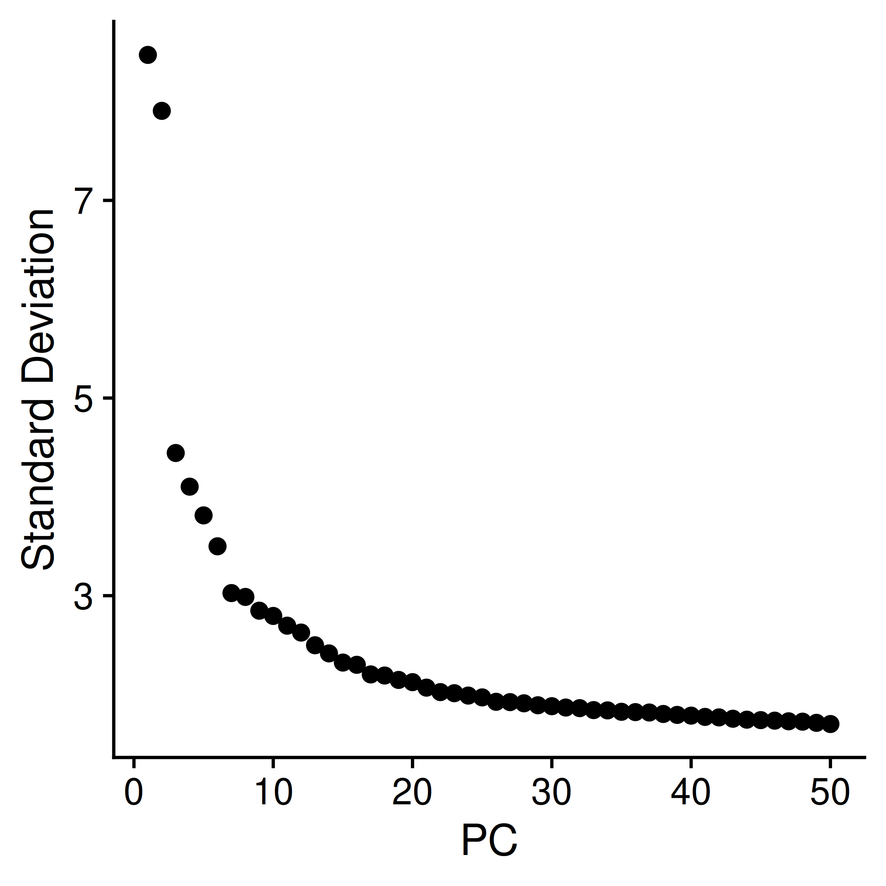
Reintegrate the samples using Harmony
EC <- RunHarmony(EC,
assay.use="SCT",
group.by.vars = "Sample",
dims.use = 1:50,
plot_convergence=TRUE,
.options = harmony_options(
max.iter.cluster = 100,
)
)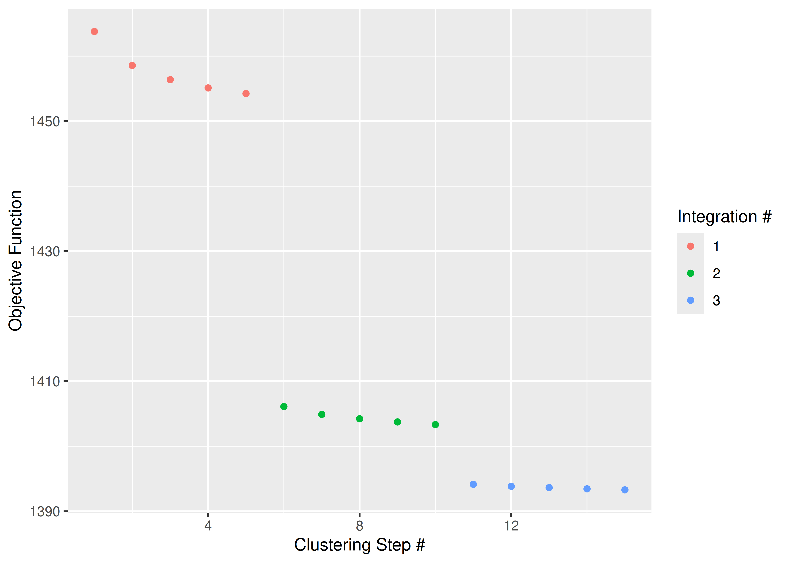
EC <- readRDS(here::here(output_dir_data, "EC.rds"))Clustering after integration
DefaultAssay(EC) <- "SCT"
EC <- RunUMAP(EC, dims = 1:50, reduction = "harmony")
EC <- FindNeighbors(EC, dims = 1:50, reduction = "harmony")
EC <- FindClusters(EC, resolution = seq(0.1, 0.8, by=0.1))clustree::clustree(EC@meta.data[,grep("SCT_snn_res", colnames(EC@meta.data))], prefix = "SCT_snn_res.")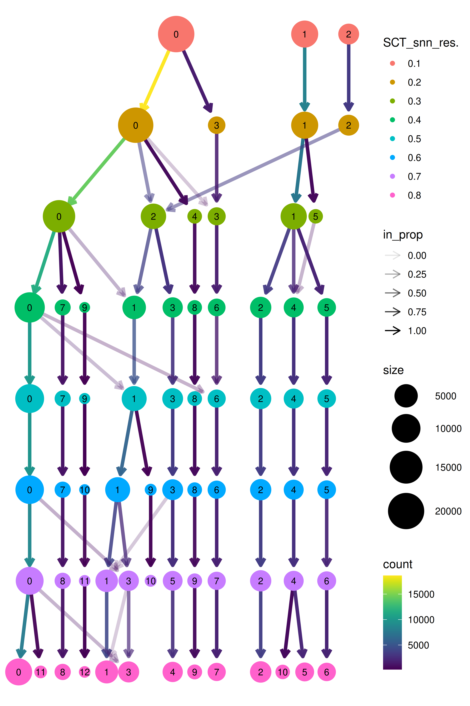
DimPlot(EC, reduction = "umap", shuffle = T,
group.by = c("SCT_snn_res.0.3", "Sample", "Group", "Batch_processing"), ncol = 2)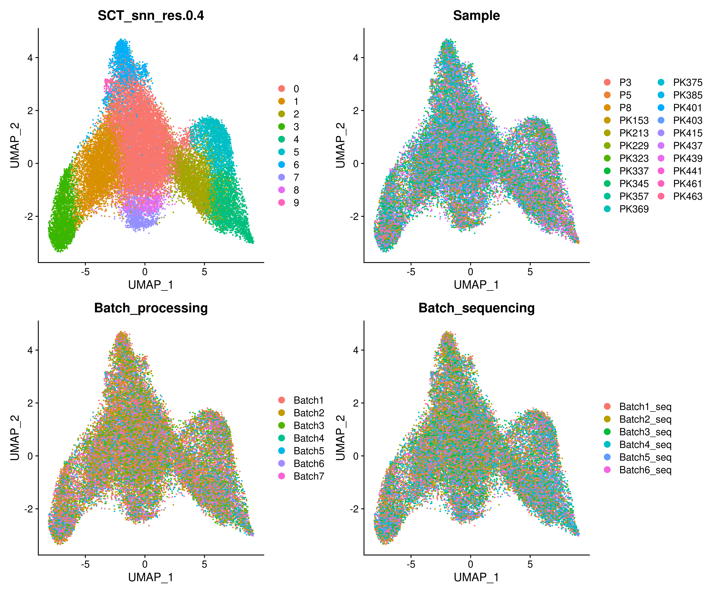
Find the markers that characterize each cell population
DefaultAssay(EC) <- "RNA"
EC <- NormalizeData(EC)
Idents(EC) <- "SCT_snn_res.0.3"
Markers <- FindAllMarkers(EC, only.pos = TRUE, min.pct = 0.1, logfc.threshold = 0.25)
Markers_top10 <- as.data.frame(Markers %>% group_by(cluster) %>% top_n(n = 10, wt = avg_log2FC))
Markers_top3 <- as.data.frame(Markers %>% group_by(cluster) %>% top_n(n = 3, wt = avg_log2FC))heatmap_cols <- colorRampPalette(RColorBrewer::brewer.pal(9,"RdBu"))(256)
heatmap_cols <- rev(heatmap_cols[1:256])
Heatmap <- DoHeatmap(subset(EC, cells = sample(colnames(EC), 20000)), label = FALSE, draw.line = F, features = Markers_top10$gene, assay = "SCT") +
scale_fill_gradientn(colours = heatmap_cols) +
theme(axis.text.y = element_text(size = 5)) +
theme(plot.margin = unit(c(0.1, 0, 0, 0),
"inches"))
Heatmap
cell_type_cols <- c("#d05050", "#33A02C", "#1F78B4", "#CAB2D6", "#FF7F00", "#B2DF8A", "#B15928", "#FFD000", "#FA95C0", "#FDBF6F", "#6A3D9A", "#7aCDF9", "#E6E600")Check QC parameters in each cluster
VlnPlot_scCustom(EC, features = c("nCount_RNA", "nFeature_RNA", "percent.mt", "percent.rp"), num_columns = 2, pt.size = 0, colors_use = cell_type_cols) + theme(axis.title.x = element_blank())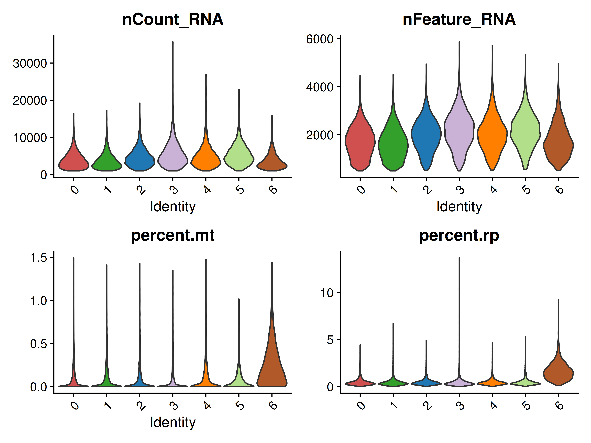
VlnPlot_scCustom(EC, features = c("ST6GALNAC3", "VWF", "PECAM1", "scDblFinder.score"), num_columns = 2, pt.size = 0, colors_use = cell_type_cols) + theme(axis.title.x = element_blank())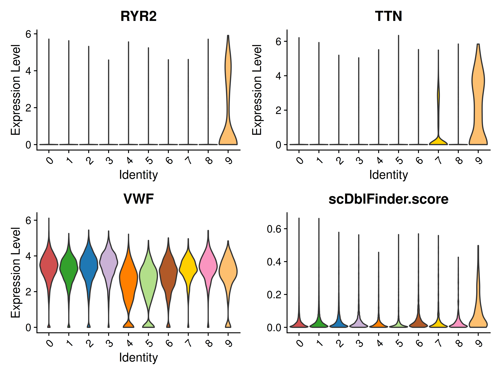
VlnPlot_scCustom(EC, features = c("TTN", "NEGR1", "EGFLAM", "MRC1"), num_columns = 2, pt.size = 0, colors_use = cell_type_cols) + theme(axis.title.x = element_blank())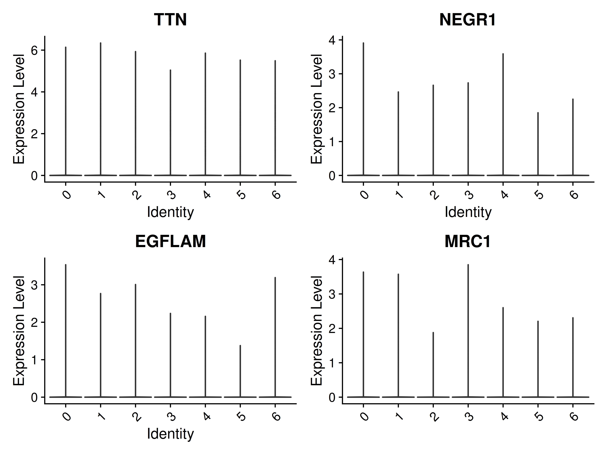
VlnPlot_scCustom(DCM_RV, features = dplyr::filter(Markers_top10, cluster == "6")$gene, num_columns = 5, pt.size = 0, colors_use = cell_type_cols) + theme(axis.title.x = element_blank())
Cell type annotation
Annotate the clusters
EC@meta.data[EC@meta.data$SCT_snn_res.0.3 %in% c("0"), "cell_state"] = "EC_capillary"
EC@meta.data[EC@meta.data$SCT_snn_res.0.3 %in% c("1"), "cell_state"] = "EC_arterial"
EC@meta.data[EC@meta.data$SCT_snn_res.0.3 %in% c("2"), "cell_state"] = "EC_capillary_venous"
EC@meta.data[EC@meta.data$SCT_snn_res.0.3 %in% c("3"), "cell_state"] = "EC_venous"
EC@meta.data[EC@meta.data$SCT_snn_res.0.3 %in% c("4"), "cell_state"] = "EC_arterial_elastic"
EC@meta.data[EC@meta.data$SCT_snn_res.0.3 %in% c("5"), "cell_state"] = "EC_capillary_angiogenic"
EC@meta.data[EC@meta.data$SCT_snn_res.0.3 %in% c("6"), "cell_state"] = "EC_capillary_RGS5"
EC$cell_state <- factor(EC$cell_state, levels = c("EC_capillary", "EC_arterial", "EC_capillary_venous", "EC_venous", "EC_capillary_angiogenic", "EC_arterial_elastic", "EC_capillary_RGS5"))
Idents(EC) <- EC$cell_stateDefaultAssay(EC) <- "RNA"
Markers <- FindAllMarkers(EC, only.pos = TRUE, min.pct = 0.1, logfc.threshold = 0.25)
write.csv(Markers, here::here(output_dir_data, "EC_Markers_all_cell_state.csv"))
Markers_top10 <- as.data.frame(Markers %>% group_by(cluster) %>% top_n(n = 10, wt = avg_log2FC))
write.csv(Markers_top10, here::here(output_dir_data, "EC_Markers_top10_cell_state.csv"))
Markers_top3 <- as.data.frame(Markers %>% group_by(cluster) %>% top_n(n = 3, wt = avg_log2FC))
write.csv(Markers_top3, here::here(output_dir_data, "EC_Markers_top3_cell_state.csv"))Heatmap <- DoHeatmap(subset(EC, cells = sample(colnames(EC), 10000)),
features = Markers_top10$gene,
label = FALSE,
draw.line = TRUE,
group.by = "cell_state",
group.colors = cell_type_cols,
lines.width = 1,
assay = "SCT") +
scale_fill_gradientn(colours = heatmap_cols) +
theme(text = element_text(size = 15),
axis.text.y = element_text(size = 7))
Heatmap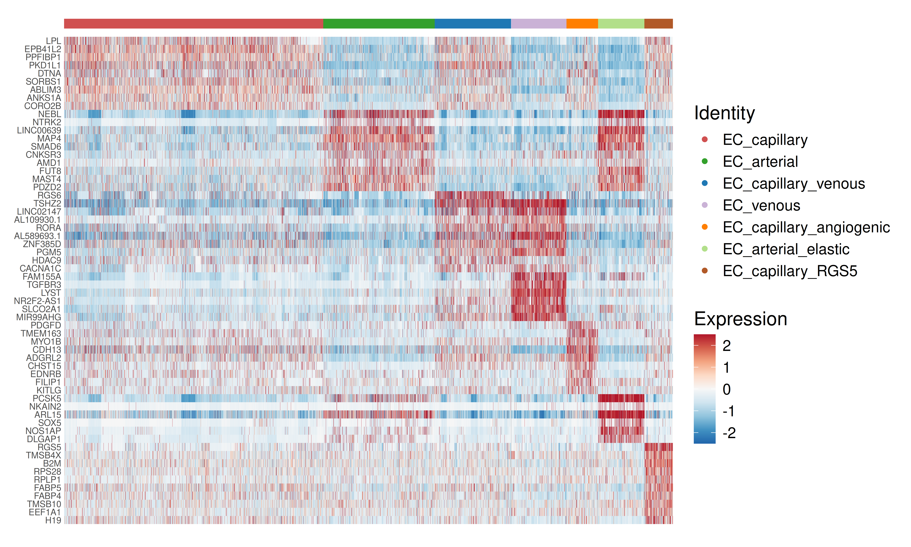
p <- DimPlot(
EC,
group.by = "cell_state",
reduction = "umap",
cols = cell_type_cols,
label = FALSE,
shuffle=T,
pt.size = 0.1
) +
NoLegend() +
theme(axis.text = element_text(size = 8, face = "bold"),
axis.title = element_text(size = 12, face = "bold"),
plot.title = element_blank())
LabelClusters(p,
id = "cell_state",
fontface = "bold",
size = 7,
repel = TRUE)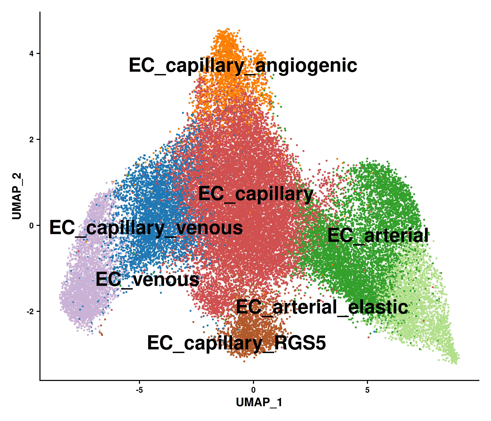
Idents(EC) <- factor(
Idents(EC),
levels = rev(levels(Idents(EC)))
)
p <- DotPlot_scCustom(
EC,
features = Markers_top3$gene,
x_lab_rotate = TRUE
)
p + theme(
axis.text.x = element_text(size = 12,
angle = 60,
vjust = 1,
hjust = 1),
axis.text.y = element_text(size = 15)) 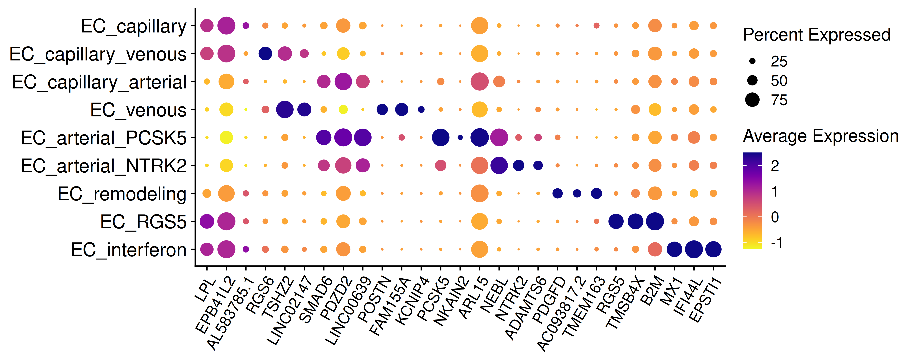
Idents(EC) <- EC$cell_stateVlnPlot_scCustom(EC, features = c("EPB41L2", "NEBL", "RGS6", "POSTN", "NKAIN2", "PDGFD", "RGS5"), num_columns = 7, colors_use = cell_type_cols)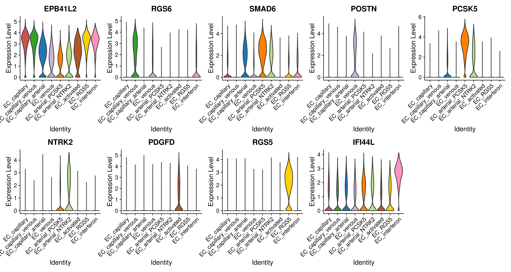
FeaturePlot_scCustom(EC, features = c("EPB41L2", "NEBL", "RGS6", "POSTN", "NKAIN2", "PDGFD", "RGS5"), num_columns = 4)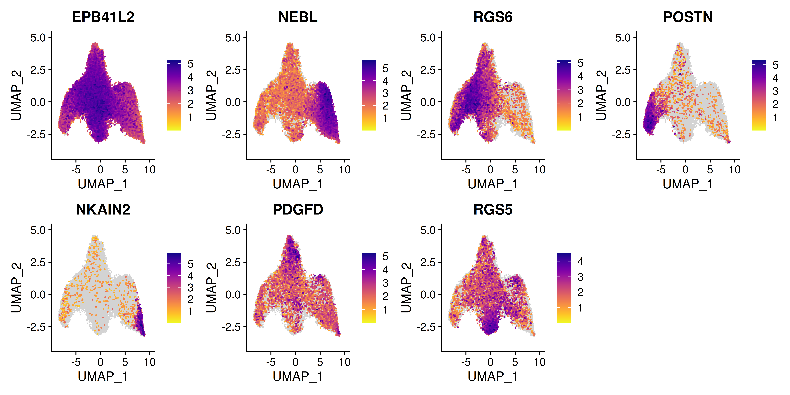
FeaturePlot_scCustom(EC, features = Markers_top3$gene, num_columns = 3)
cap <- c("RGCC", "CA4", "INMT", "CD36")
art <- c("DLL4", "SEMA3G", "HEY1", "FBLN5", "ELN", "FBN1")
ven <- c("NR2F2", "ACKR1", "EPHB4", "VCAM1", "SELP")
ang <- c("KIT", "ANGPT1", "ANGPT2", "ESM1")FeaturePlot_scCustom(EC, features = c(cap, art, ven, ang), num_columns = 4)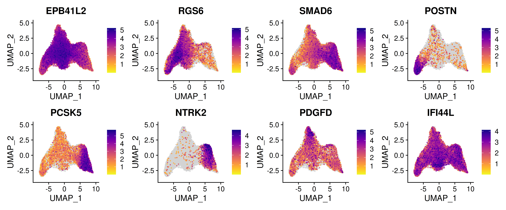
props <- getTransformedProps(EC$cell_state, EC$Sample, transform="logit")
par(mar = c(7, 5, 1, 22), xpd = TRUE)
barplot(props$Proportions, legend = FALSE, ylab = "Proportions", col = cell_type_cols,
cex.names = 2, las = 2, font.lab = 2, font.axis = 2, cex.axis = 1.2, cex.lab = 2)
legend("topright", inset = c(-0.45, 0.1), legend = rownames(props$Proportions), fill = cell_type_cols, bty = "n", cex = 2)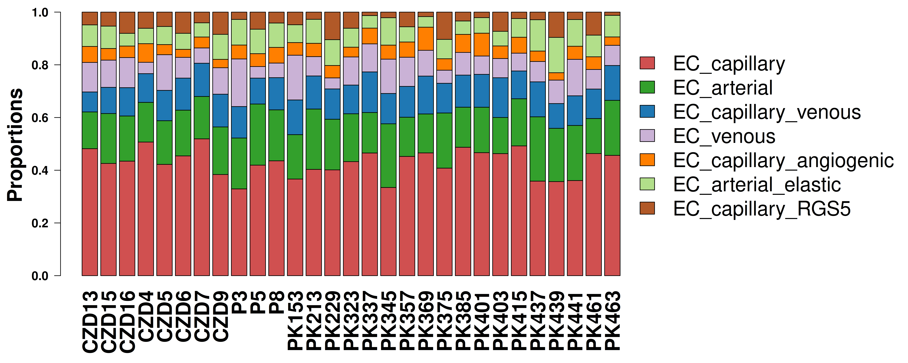
props <- getTransformedProps(EC$cell_state, EC$Group, transform="logit")
par(mar = c(7, 5, 1, 24), xpd = TRUE)
barplot(props$Proportions, legend = FALSE, ylab = "Proportions", col = cell_type_cols,
cex.names = 2, las = 2, font.lab = 2, font.axis = 2, cex.axis = 1.2, cex.lab = 2)
legend("topright", inset = c(-2.1, 0.15), legend = rownames(props$Proportions), fill = cell_type_cols, bty = "n", cex = 2)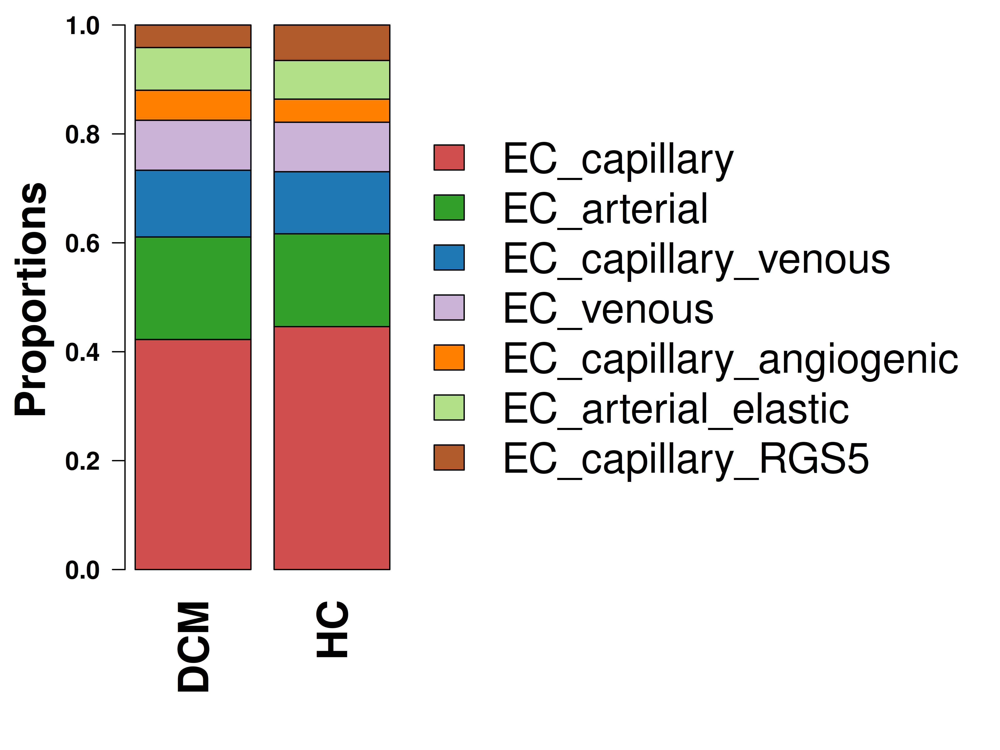
df <- Markers[,7:6]
dfsample <- split(df$gene,df$cluster)
length(dfsample)[1] 7dfsample$EC_capillary = bitr(dfsample$EC_capillary, fromType="SYMBOL", toType="ENTREZID", OrgDb="org.Hs.eg.db")
dfsample$EC_arterial = bitr(dfsample$EC_arterial, fromType="SYMBOL", toType="ENTREZID", OrgDb="org.Hs.eg.db")
dfsample$EC_capillary_venous = bitr(dfsample$EC_capillary_venous, fromType="SYMBOL", toType="ENTREZID", OrgDb="org.Hs.eg.db")
dfsample$EC_venous = bitr(dfsample$EC_venous, fromType="SYMBOL", toType="ENTREZID", OrgDb="org.Hs.eg.db")
dfsample$EC_capillary_angiogenic = bitr(dfsample$EC_capillary_angiogenic, fromType="SYMBOL", toType="ENTREZID", OrgDb="org.Hs.eg.db")
dfsample$EC_arterial_elastic = bitr(dfsample$EC_arterial_elastic, fromType="SYMBOL", toType="ENTREZID", OrgDb="org.Hs.eg.db")
dfsample$EC_capillary_RGS5 = bitr(dfsample$EC_capillary_RGS5, fromType="SYMBOL", toType="ENTREZID", OrgDb="org.Hs.eg.db")
genelist <- list("EC_capillary" = dfsample$EC_capillary$ENTREZID,
"EC_arterial" = dfsample$EC_arterial$ENTREZID,
"EC_capillary_venous" = dfsample$EC_capillary_venous$ENTREZID,
"EC_venous" = dfsample$EC_venous$ENTREZID,
"EC_arterial_elastic" = dfsample$EC_arterial_elastic$ENTREZID,
"EC_capillary_angiogenic" = dfsample$EC_capillary_angiogenic$ENTREZID,
"EC_capillary_RGS5" = dfsample$EC_capillary_RGS5$ENTREZID
)
gene_counts <- rowSums(EC@assays$RNA@counts > 0)
universe_genes <- names(gene_counts[gene_counts >= 3])
universe_entrez <- bitr(universe_genes, fromType = "SYMBOL", toType = "ENTREZID", OrgDb = org.Hs.eg.db)$ENTREZIDGO <- compareCluster(geneCluster = genelist, fun = "enrichGO", ont = "ALL", OrgDb = "org.Hs.eg.db", universe = universe_entrez)
GO <- gsfilter(GO, by = 'Count', min = 3)
dotplot(GO, label_format = 35, title = "GO - Over-representation analysis") +
theme(axis.text.x = element_text(angle = 45, hjust = 1))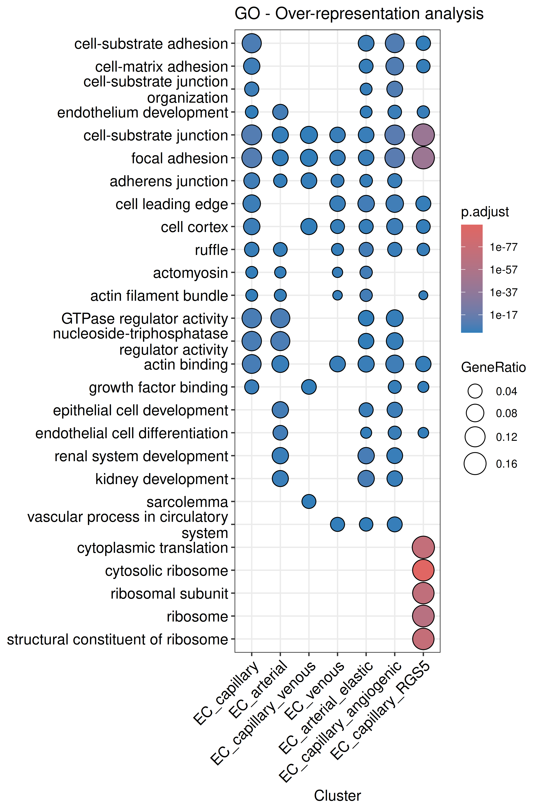
GO_simplified <- clusterProfiler::simplify(
GO,
cutoff = 0.5,
by = "p.adjust",
select_fun = min,
measure = "Wang",
semData = NULL
)
dotplot(GO_simplified, label_format = 40, title = "GO - Over-representation analysis") +
theme(axis.text.x = element_text(angle = 45, hjust = 1))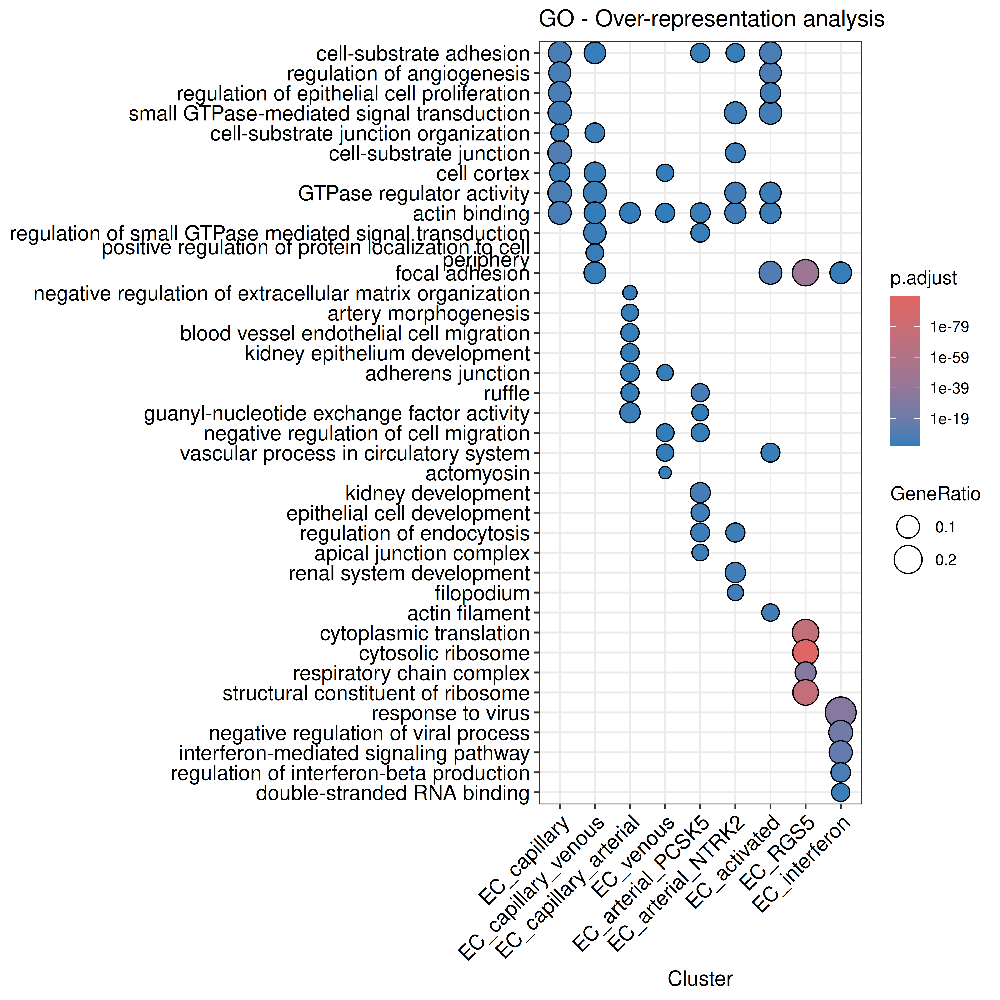
KEGG <- compareCluster(geneCluster = genelist, fun = "enrichKEGG", organism = 'hsa', universe = universe_entrez)
KEGG <- gsfilter(KEGG, by = 'Count', min = 3)
dotplot(KEGG, label_format = 35, title = "KEGG Pathways") +
theme(axis.text.x = element_text(angle = 45, hjust = 1))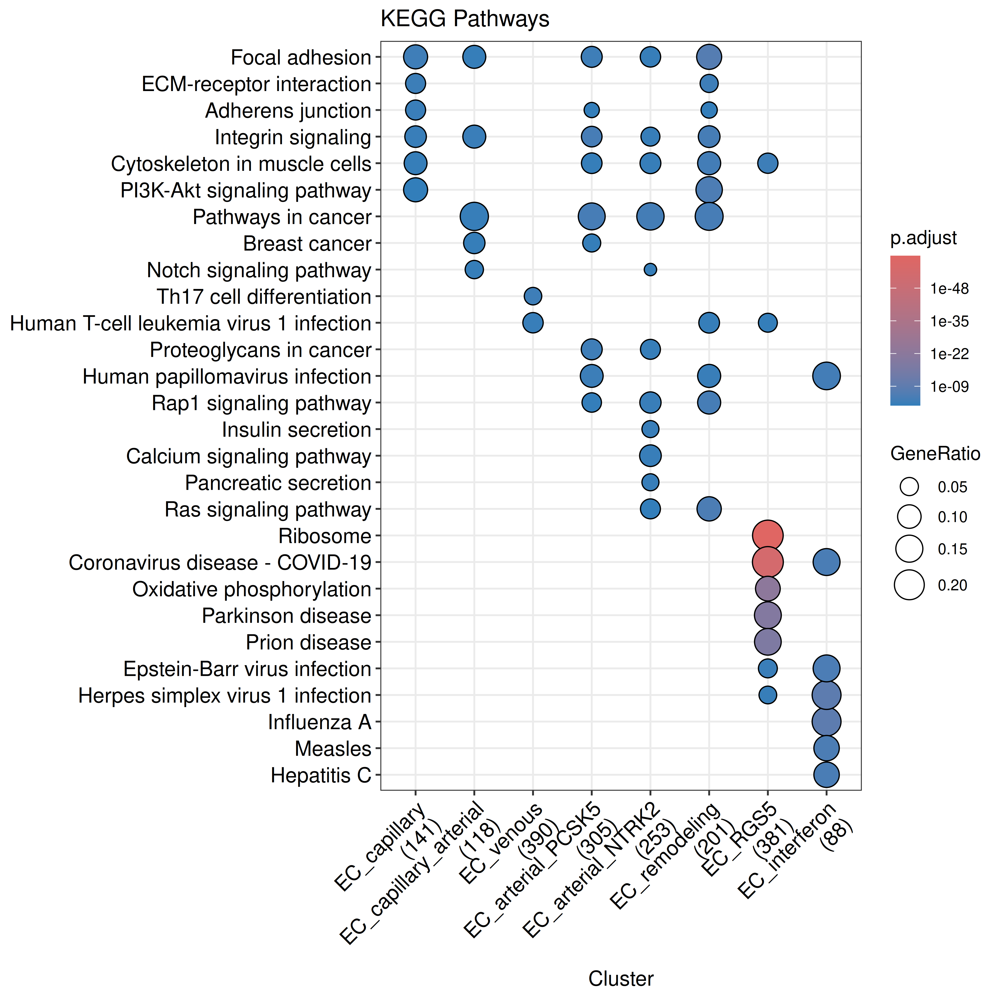
REACTOME <- compareCluster(geneCluster = genelist, fun = "enrichPathway", organism = 'human', universe = universe_entrez)
REACTOME <- gsfilter(REACTOME, by = 'Count', min = 3)
dotplot(REACTOME, label_format = 30, title = "REACTOME", showCategory = 4) +
theme(axis.text.x = element_text(angle = 45, hjust = 1))Differential abundance analysis
metadata <- EC@meta.data %>%
dplyr::select(Sample, Batch_processing, Batch_sequencing, Age_years, Sex, Group, mPAP_mmHg, sPAP_mmHg, PCW_mmHg, PVR_WU, TAPSE_mm, RVID_mm, LVEF_percent, LVEDD_mm) %>%
unique() %>%
dplyr::arrange(match(Sample, names(table(EC$Sample))))
rownames(metadata) <- metadata$Sample
all.equal(metadata$Sample, names(table(EC$Sample)))[1] TRUEreactable(metadata,
filterable = TRUE,
searchable = TRUE,
showPageSizeOptions = TRUE)metadata_DCM <- metadata %>%
dplyr::filter(Group == "DCM")differential_abundance <- data.frame()
props <- getTransformedProps(EC$cell_state, EC$Sample, transform="logit")
for (i in 7:(length(metadata_DCM))) {
metadata_subset <- metadata_DCM[complete.cases(metadata_DCM[[i]]),]
props_subset <- props
props_subset$Counts <- props$Counts[, metadata_subset$Sample, drop = FALSE]
props_subset$TransformedProps <- props$TransformedProps[, metadata_subset$Sample, drop = FALSE]
props_subset$Proportions <- props$Proportions[, metadata_subset$Sample, drop = FALSE]
metadata_subset <- metadata_subset %>%
arrange(Sample, colnames(props_subset$Proportions))
design <- model.matrix(~ metadata_subset[[i]] + metadata_subset[["Age_years"]])
fit <- lmFit(props_subset$TransformedProps, design)
fit <- eBayes(fit, robust=TRUE)
differential_abundance_temp <- topTable(fit, n = Inf, coef = 2)
differential_abundance_temp$metadata <- colnames(metadata_subset[i])
differential_abundance_temp$cell_state <- rownames(differential_abundance_temp)
differential_abundance <- rbind(differential_abundance, differential_abundance_temp)
}
rm(metadata_subset, props_subset, design, fit, differential_abundance_temp)
rownames(differential_abundance) <- NULL
differential_abundance <- dplyr::arrange(differential_abundance, adj.P.Val)
write.csv(differential_abundance, file = here::here(output_dir_data, "EC_Differential_Abundance.csv"), row.names = F)
reactable(differential_abundance,
filterable = TRUE,
searchable = TRUE,
showPageSizeOptions = TRUE)metadata_subset <- metadata[complete.cases(metadata[["mPAP_mmHg"]]),]
props_subset <- props
props_subset$Counts <- props$Counts[, metadata_subset$Sample, drop = FALSE]
props_subset$TransformedProps <- props$TransformedProps[, metadata_subset$Sample, drop = FALSE]
props_subset$Proportions <- props$Proportions[, metadata_subset$Sample, drop = FALSE]
metadata_subset <- metadata_subset %>%
arrange(Sample, colnames(props_subset$Proportions))
design <- model.matrix(~ metadata_subset$mPAP_mmHg + metadata_subset$Age_years)
fit.prop <- lmFit(props_subset$Proportions,design)
par(mfrow=c(2,4), mar = c(5, 5, 3, 1))
for(i in seq(1,7,1)){
plot(metadata_subset$mPAP_mmHg, props_subset$Proportions[i,], main = rownames(props_subset$Proportions)[i],
pch=16, cex=2, ylab="Proportions", xlab="mPAP_mmHg", cex.lab=2, cex.axis=1.5,
cex.main=2.5)
abline(a=fit.prop$coefficients[i,1], b=fit.prop$coefficients[i,2], col=4,
lwd=1)
}
rm(metadata_subset, props_subset, design, fit.prop)
design <- model.matrix(~ 0 + metadata$Group)
colnames(design) <- c("DCM", "HC")
mycontr <- makeContrasts(DCM-HC, levels=design)
differential_abundance_HC <- propeller.ttest(props, design, contrasts = mycontr, robust=TRUE, trend=FALSE, sort=TRUE)
write.csv(differential_abundance_HC, file = here::here(output_dir_data, "EC_Differential_Abundance_HC.csv"), row.names = F)
reactable(differential_abundance_HC,
filterable = TRUE,
searchable = TRUE,
showPageSizeOptions = TRUE)prop_mat <- as.matrix(props$Proportions)
stopifnot(is.matrix(prop_mat))
# 2) Long format
prop_long <- as.data.frame.matrix(prop_mat) %>% # <-- important: *.matrix
tibble::rownames_to_column("state") %>%
pivot_longer(cols = -state, names_to = "Sample", values_to = "prop") %>%
mutate(Sample = as.character(Sample),
state = factor(state, levels = rownames(prop_mat))) %>%
left_join(metadata %>% dplyr::select(Sample, Group) %>% distinct(),
by = "Sample") %>%
mutate(Group = factor(Group, levels = c("HC","DCM")))
# ---- Build labels from propeller results ----
# rownames of differential_abundance_HC should be the state names
lab_df <- differential_abundance_HC %>%
mutate(state = rownames(differential_abundance_HC),
label = ifelse(FDR < 0.05, paste0("FDR=", signif(FDR, 2)), "ns")) %>%
dplyr::select(state, label)
# y-position for labels (a little above the highest point per facet)
y_pos <- prop_long %>%
group_by(state) %>%
summarise(y = max(prop, na.rm = TRUE) * 1.08, .groups = "drop")
lab_plot <- left_join(lab_df, y_pos, by = "state")
# ---- Colors (classic blue/red) ----
cols <- c(HC = "#1f77b4", DCM = "#d62728")
# ---- Plot ----
p <- ggplot(prop_long, aes(x = Group, y = prop, fill = Group, color = Group)) +
geom_boxplot(width = 0.6, outlier.shape = NA, alpha = 0.35) +
geom_jitter(width = 0.12, size = 1.8, alpha = 0.9) +
facet_wrap(~ state, nrow = 1, scales = "free_y") +
geom_text(data = lab_plot, aes(x = 1.5, y = y, label = label),
inherit.aes = FALSE, size = 4.5) +
scale_fill_manual(values = cols) +
scale_color_manual(values = cols) +
labs(x = NULL, y = "Proportions") +
theme_classic(base_size = 14) +
theme(
legend.position = "none",
strip.text = element_text(face = "bold", size = 9),
axis.text.x = element_text(size = 12),
axis.title.y = element_text(size = 13),
panel.spacing = unit(1.5, "lines")
)
p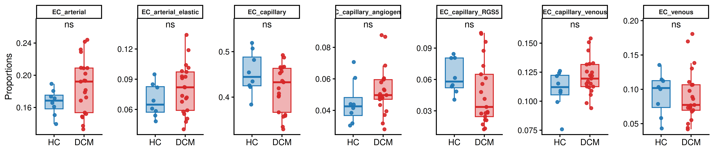
EC_proportions <- as.data.frame(props$Proportions) %>%
pivot_wider(
names_from = clusters,
values_from = Freq
)
write.csv(EC_proportions, file = here::here(output_dir_data, "EC_Proportions.csv"), row.names = F)rm(differential_abundance, differential_abundance_HC, props, EC_proportions)Transcription factor inference analysis
net <- get_collectri(organism='human', split_complexes=FALSE)expr_matrix <- GetAssayData(object = EC, assay = "RNA", slot = "counts")
non_zero_cells <- rowSums(expr_matrix > 0)
total_cells <- ncol(expr_matrix)
percent_cells <- (non_zero_cells / total_cells) * 100
percent_stats <- data.frame(gene = rownames(expr_matrix), percentCells = percent_cells)net <- net %>%
dplyr::filter(source %in% filter(percent_stats, percentCells > 1)$gene)TF_cols <- rev(colorRampPalette(RColorBrewer::brewer.pal(5, "BrBG"))(101))mat <- as.matrix(EC@assays$RNA@data)
acts <- decoupleR::run_ulm(mat = mat,
net = net,
.source = 'source',
.target = 'target',
.mor='mor',
minsize = 10)
EC[['tfsulm']] <- acts %>%
tidyr::pivot_wider(id_cols = 'source',
names_from = 'condition',
values_from = 'score') %>%
tibble::column_to_rownames('source') %>%
Seurat::CreateAssayObject(.)
DefaultAssay(object = EC) <- "tfsulm"
EC <- Seurat::ScaleData(EC)
EC@assays$tfsulm@data <- EC@assays$tfsulm@scale.datan_tfs <- 10
df <- t(as.matrix(EC@assays$tfsulm@data)) %>%
as.data.frame() %>%
dplyr::mutate(cluster = Seurat::Idents(EC)) %>%
tidyr::pivot_longer(cols = -cluster,
names_to = "source",
values_to = "score") %>%
dplyr::group_by(cluster, source) %>%
dplyr::summarise(mean = mean(score))
tfs <- df %>%
dplyr::group_by(source) %>%
dplyr::summarise(std = stats::sd(mean)) %>%
dplyr::arrange(-abs(std)) %>%
head(n_tfs) %>%
dplyr::pull(source)
top_acts_mat <- df %>%
dplyr::filter(source %in% tfs) %>%
tidyr::pivot_wider(id_cols = 'cluster',
names_from = 'source',
values_from = 'mean') %>%
tibble::column_to_rownames('cluster') %>%
as.matrix()
my_breaks <- c(seq(-2, 0, length.out = ceiling(101 / 2) + 1),
seq(0.05, 2, length.out = floor(101 / 2)))
# Plot
pheatmap::pheatmap(mat = top_acts_mat,
color = TF_cols,
border_color = "white",
breaks = my_breaks,
cellwidth = 15,
cellheight = 15,
treeheight_row = 20,
treeheight_col = 20) 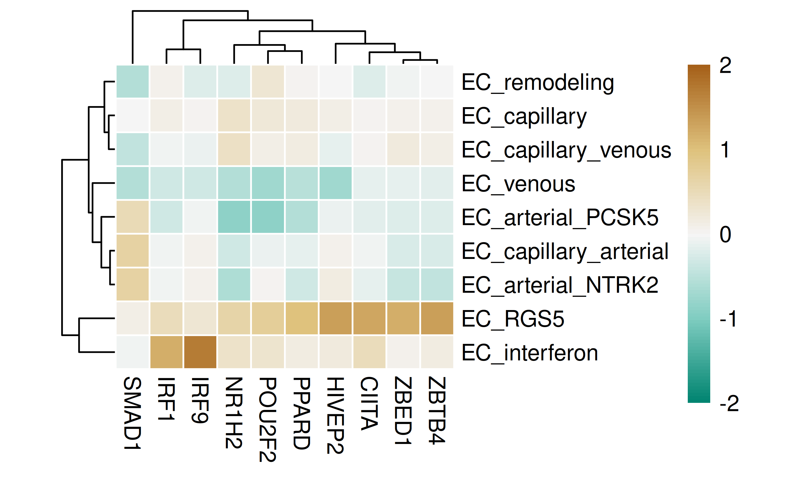
n_tfs <- 20
df <- t(as.matrix(EC@assays$tfsulm@data)) %>%
as.data.frame() %>%
dplyr::mutate(cluster = Seurat::Idents(EC)) %>%
tidyr::pivot_longer(cols = -cluster,
names_to = "source",
values_to = "score") %>%
dplyr::group_by(cluster, source) %>%
dplyr::summarise(mean = mean(score))
tfs <- df %>%
dplyr::group_by(source) %>%
dplyr::summarise(std = stats::sd(mean)) %>%
dplyr::arrange(-abs(std)) %>%
head(n_tfs) %>%
dplyr::pull(source)
top_acts_mat <- df %>%
dplyr::filter(source %in% tfs) %>%
tidyr::pivot_wider(id_cols = 'cluster',
names_from = 'source',
values_from = 'mean') %>%
tibble::column_to_rownames('cluster') %>%
as.matrix()
my_breaks <- c(seq(-2, 0, length.out = ceiling(100 / 2) + 1),
seq(0.05, 2, length.out = floor(100 / 2)))
# Plot
pheatmap::pheatmap(mat = top_acts_mat,
color = TF_cols,
border_color = "white",
breaks = my_breaks,
cellwidth = 15,
cellheight = 15,
treeheight_row = 20,
treeheight_col = 20) 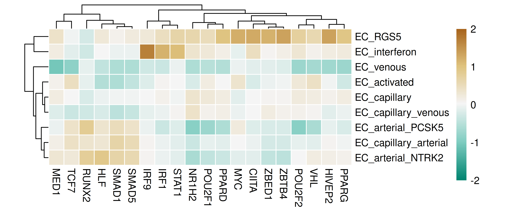
Seurat::DefaultAssay(EC) <- "tfsulm"
p1 <- Seurat::DimPlot(EC,
reduction = "umap",
label = TRUE,
pt.size = 0.1) +
Seurat::NoLegend() +
ggplot2::ggtitle('Cell states')
p2 <- Seurat::FeaturePlot(EC, features = c("VHL"), pt.size = 0.1, order = T) +
ggplot2::scale_colour_gradient2(low = TF_cols[1], high = TF_cols[101], mid = "white") +
ggplot2::ggtitle('VHL activity')
DefaultAssay(object = EC) <- "RNA"
p3 <- FeaturePlot_scCustom(EC,
features = c("VHL"), pt.size = 0.1) +
ggplot2::ggtitle('VHL expression')
Seurat::DefaultAssay(EC) <- "tfsulm"
p <- p1 | p2 | p3
p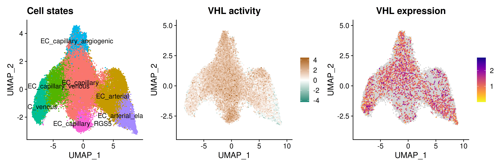
Pathway activity inference
net_path <- get_progeny(organism = 'human', top = 100000)Pathway_cols <- colorRampPalette(c("#28A2EB", "white", "#FEC233"))(101)acts_pathway <- decoupleR::run_mlm(mat = mat,
net = net_path,
.source = 'source',
.target = 'target',
.mor = 'weight',
minsize = 10)
EC[['pathwaysmlm']] <- acts_pathway %>%
tidyr::pivot_wider(id_cols = 'source',
names_from = 'condition',
values_from = 'score') %>%
tibble::column_to_rownames(var = 'source') %>%
Seurat::CreateAssayObject(.)
Seurat::DefaultAssay(object = EC) <- "pathwaysmlm"
EC <- Seurat::ScaleData(EC)
EC@assays$pathwaysmlm@data <- EC@assays$pathwaysmlm@scale.datadf_pathway <- t(as.matrix(EC@assays$pathwaysmlm@data)) %>%
as.data.frame() %>%
dplyr::mutate(cluster = Seurat::Idents(EC)) %>%
tidyr::pivot_longer(cols = -cluster,
names_to = "source",
values_to = "score") %>%
dplyr::group_by(cluster, source) %>%
dplyr::summarise(mean = mean(score))
top_acts_mat <- df_pathway %>%
tidyr::pivot_wider(id_cols = 'cluster',
names_from = 'source',
values_from = 'mean') %>%
tibble::column_to_rownames(var = 'cluster') %>%
as.matrix()
my_breaks <- c(seq(-1.25, 0, length.out = ceiling(101 / 2) + 1),
seq(0.05, 1.25, length.out = floor(101 / 2)))
pheatmap::pheatmap(mat = top_acts_mat,
color = Pathway_cols,
border_color = "white",
breaks = my_breaks,
cellwidth = 20,
cellheight = 20,
treeheight_row = 20,
treeheight_col = 20) 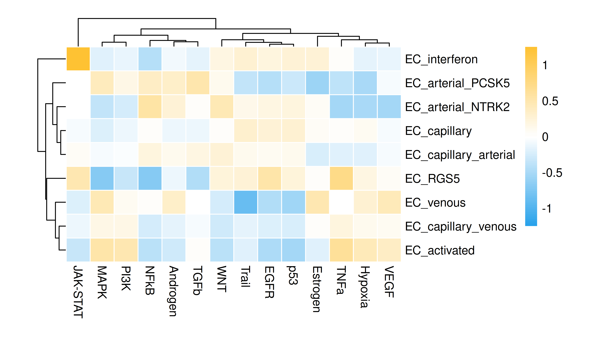
Seurat::DefaultAssay(object = EC) <- "pathwaysmlm"
p1 <- Seurat::DimPlot(EC,
reduction = "umap",
label = TRUE,
pt.size = 0.11) +
Seurat::NoLegend() +
ggplot2::ggtitle('Cell states')
p2 <- Seurat::FeaturePlot(EC, features = c("TGFb"),
pt.size = 0.1, order = F) +
ggplot2::scale_colour_gradientn(colors = Pathway_cols
) +
ggplot2::ggtitle('TGFb activity')
p <- p1 | p2
p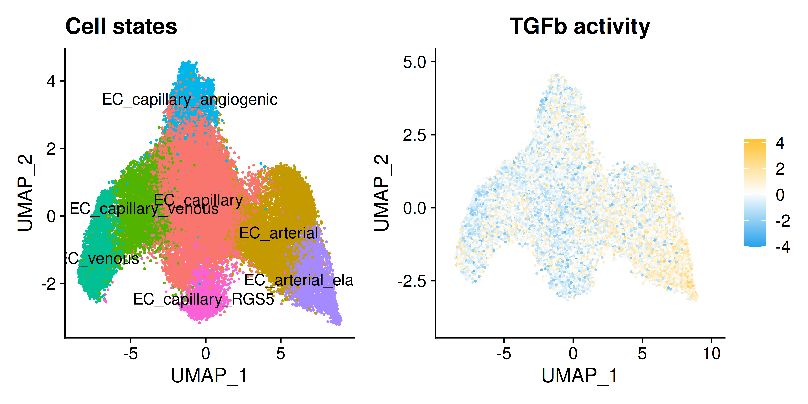
cell_states <- data.frame(
cell = colnames(EC),
cell_state = EC$cell_state
)
write.csv(
cell_states,
here::here(output_dir_data, "EC_cell_states.csv"),
row.names = FALSE
)saveRDS(EC,
here::here(output_dir_data, "EC.rds"))
sessionInfo()R version 4.5.2 (2025-10-31)
Platform: x86_64-pc-linux-gnu
Running under: Ubuntu 24.04.3 LTS
Matrix products: default
BLAS: /usr/lib/x86_64-linux-gnu/openblas-pthread/libblas.so.3
LAPACK: /usr/lib/x86_64-linux-gnu/openblas-pthread/libopenblasp-r0.3.26.so; LAPACK version 3.12.0
locale:
[1] LC_CTYPE=en_US.UTF-8 LC_NUMERIC=C
[3] LC_TIME=en_US.UTF-8 LC_COLLATE=en_US.UTF-8
[5] LC_MONETARY=en_US.UTF-8 LC_MESSAGES=en_US.UTF-8
[7] LC_PAPER=en_US.UTF-8 LC_NAME=C
[9] LC_ADDRESS=C LC_TELEPHONE=C
[11] LC_MEASUREMENT=en_US.UTF-8 LC_IDENTIFICATION=C
time zone: Etc/UTC
tzcode source: system (glibc)
attached base packages:
[1] stats4 stats graphics grDevices datasets utils methods
[8] base
other attached packages:
[1] edgeR_4.8.0 dorothea_1.22.0
[3] OmnipathR_3.18.2 decoupleR_2.16.0
[5] reactable_0.4.5 limma_3.66.0
[7] speckle_1.10.0 ReactomePA_1.54.0
[9] AnnotationHub_4.0.0 BiocFileCache_3.0.0
[11] dbplyr_2.5.1 gprofiler2_0.2.4
[13] harmony_1.2.4 Rcpp_1.1.0
[15] clustree_0.5.1 ggraph_2.2.2
[17] statmod_1.5.1 scater_1.38.0
[19] scuttle_1.20.0 Matrix.utils_0.9.7
[21] gridExtra_2.3 png_0.1-8
[23] pheatmap_1.0.13 reshape2_1.4.5
[25] lubridate_1.9.4 forcats_1.0.1
[27] stringr_1.6.0 purrr_1.2.0
[29] tidyr_1.3.1 tidyverse_2.0.0
[31] magrittr_2.0.4 scCustomize_3.2.2
[33] scDblFinder_1.24.0 Matrix_1.6-5
[35] DropletUtils_1.30.0 SingleCellExperiment_1.32.0
[37] SummarizedExperiment_1.40.0 GenomicRanges_1.62.0
[39] Seqinfo_1.0.0 MatrixGenerics_1.22.0
[41] matrixStats_1.5.0 SeuratObject_5.0.2
[43] Seurat_4.4.0 enrichplot_1.30.4
[45] org.Hs.eg.db_3.22.0 AnnotationDbi_1.72.0
[47] IRanges_2.44.0 S4Vectors_0.48.0
[49] Biobase_2.70.0 BiocGenerics_0.56.0
[51] generics_0.1.4 clusterProfiler_4.18.2
[53] scales_1.4.0 patchwork_1.3.2
[55] knitr_1.50 readxl_1.4.5
[57] readr_2.1.6 tibble_3.3.0
[59] ggplot2_4.0.1 dplyr_1.1.4
[61] here_1.0.2
loaded via a namespace (and not attached):
[1] igraph_2.2.1 graph_1.88.0
[3] ica_1.0-3 plotly_4.11.0
[5] rematch2_2.1.2 tidyselect_1.2.1
[7] rvest_1.0.5 bit_4.6.0
[9] lattice_0.22-7 rjson_0.2.23
[11] blob_1.2.4 S4Arrays_1.10.1
[13] parallel_4.5.2 cli_3.6.5
[15] ggplotify_0.1.3 goftest_1.2-3
[17] BiocIO_1.20.0 bluster_1.20.0
[19] grr_0.9.5 BiocNeighbors_2.4.0
[21] uwot_0.2.4 curl_7.0.0
[23] mime_0.13 evaluate_1.0.5
[25] tidytree_0.4.6 leiden_0.4.3.1
[27] stringi_1.8.7 backports_1.5.0
[29] XML_3.99-0.20 httpuv_1.6.16
[31] paletteer_1.6.0 rappdirs_0.3.3
[33] splines_4.5.2 logger_0.4.1
[35] bcellViper_1.46.0 sctransform_0.4.2
[37] ggbeeswarm_0.7.3 sessioninfo_1.2.3
[39] DBI_1.2.3 HDF5Array_1.38.0
[41] jquerylib_0.1.4 reactome.db_1.94.0
[43] withr_3.0.2 git2r_0.36.2
[45] systemfonts_1.3.1 rprojroot_2.1.1
[47] xgboost_3.1.2.1 lmtest_0.9-40
[49] ggnewscale_0.5.2 tidygraph_1.3.1
[51] rtracklayer_1.70.0 BiocManager_1.30.27
[53] htmlwidgets_1.6.4 fs_1.6.6
[55] ggrepel_0.9.6 labeling_0.4.3
[57] SparseArray_1.10.4 cellranger_1.1.0
[59] h5mread_1.2.1 reticulate_1.44.1
[61] zoo_1.8-14 XVector_0.50.0
[63] UCSC.utils_1.6.0 RhpcBLASctl_0.23-42
[65] timechange_0.3.0 grid_4.5.2
[67] data.table_1.17.8 ggtree_4.0.1
[69] rhdf5_2.54.0 R.oo_1.27.1
[71] ggiraph_0.9.2 irlba_2.3.5.1
[73] ggrastr_1.0.2 gridGraphics_0.5-1
[75] lazyeval_0.2.2 yaml_2.3.11
[77] survival_3.8-3 scattermore_1.2
[79] BiocVersion_3.22.0 crayon_1.5.3
[81] RcppAnnoy_0.0.22 RColorBrewer_1.1-3
[83] progressr_0.18.0 tweenr_2.0.3
[85] later_1.4.4 ggridges_0.5.7
[87] codetools_0.2-20 GlobalOptions_0.1.3
[89] KEGGREST_1.50.0 Rtsne_0.17
[91] shape_1.4.6.1 reactR_0.6.1
[93] gdtools_0.4.4 Rsamtools_2.26.0
[95] filelock_1.0.3 pkgconfig_2.0.3
[97] xml2_1.5.1 spatstat.univar_3.1-5
[99] GenomicAlignments_1.46.0 aplot_0.2.9
[101] spatstat.sparse_3.1-0 ape_5.8-1
[103] viridisLite_0.4.2 xtable_1.8-4
[105] plyr_1.8.9 httr_1.4.7
[107] tools_4.5.2 globals_0.18.0
[109] beeswarm_0.4.0 checkmate_2.3.3
[111] nlme_3.1-168 selectr_0.5-0
[113] crosstalk_1.2.2 digest_0.6.39
[115] farver_2.1.2 tzdb_0.5.0
[117] yulab.utils_0.2.2 viridis_0.6.5
[119] glue_1.8.0 cachem_1.1.0
[121] polyclip_1.10-7 Biostrings_2.78.0
[123] parallelly_1.45.1 ScaledMatrix_1.18.0
[125] fontBitstreamVera_0.1.1 pbapply_1.7-4
[127] httr2_1.2.1 tcltk_4.5.2
[129] vroom_1.6.7 spam_2.11-1
[131] gson_0.1.0 dqrng_0.4.1
[133] graphlayouts_1.2.2 shiny_1.12.0
[135] tidydr_0.0.6 R.utils_2.13.0
[137] rhdf5filters_1.22.0 RCurl_1.98-1.17
[139] memoise_2.0.1 rmarkdown_2.30
[141] R.methodsS3_1.8.2 future_1.68.0
[143] RANN_2.6.2 fontLiberation_0.1.0
[145] renv_1.1.5 Cairo_1.7-0
[147] spatstat.data_3.1-9 rstudioapi_0.17.1
[149] cluster_2.1.8.1 whisker_0.4.1
[151] janitor_2.2.1 spatstat.utils_3.2-0
[153] hms_1.1.4 fitdistrplus_1.2-4
[155] cowplot_1.2.0 colorspace_2.1-2
[157] rlang_1.1.6 GenomeInfoDb_1.46.1
[159] DelayedMatrixStats_1.32.0 sparseMatrixStats_1.22.0
[161] dotCall64_1.2 ggforce_0.5.0
[163] circlize_0.4.16 ggtangle_0.0.9
[165] xfun_0.54 abind_1.4-8
[167] GOSemSim_2.36.0 treeio_1.34.0
[169] Rhdf5lib_1.32.0 bitops_1.0-9
[171] promises_1.5.0 scatterpie_0.2.6
[173] RSQLite_2.4.5 qvalue_2.42.0
[175] fgsea_1.36.0 DelayedArray_0.36.0
[177] GO.db_3.22.0 compiler_4.5.2
[179] prettyunits_1.2.0 beachmat_2.26.0
[181] graphite_1.56.0 listenv_0.10.0
[183] fontquiver_0.2.1 workflowr_1.7.2
[185] BiocSingular_1.26.1 tensor_1.5.1
[187] MASS_7.3-65 progress_1.2.3
[189] BiocParallel_1.44.0 spatstat.random_3.4-3
[191] R6_2.6.1 fastmap_1.2.0
[193] fastmatch_1.1-6 vipor_0.4.7
[195] ROCR_1.0-11 rsvd_1.0.5
[197] gtable_0.3.6 KernSmooth_2.23-26
[199] miniUI_0.1.2 deldir_2.0-4
[201] htmltools_0.5.9 bit64_4.6.0-1
[203] spatstat.explore_3.6-0 lifecycle_1.0.4
[205] ggprism_1.0.7 S7_0.2.1
[207] zip_2.3.3 restfulr_0.0.16
[209] sass_0.4.10 vctrs_0.6.5
[211] spatstat.geom_3.6-1 snakecase_0.11.1
[213] DOSE_4.4.0 scran_1.38.0
[215] ggfun_0.2.0 sp_2.2-0
[217] future.apply_1.20.0 bslib_0.9.0
[219] pillar_1.11.1 metapod_1.18.0
[221] locfit_1.5-9.12 otel_0.2.0
[223] jsonlite_2.0.0 cigarillo_1.0.0